Chapter 10 processed a bounded pile of input files and finished. Real data is unbounded: users keep producing it forever, so instead of waiting for a day's worth, we process each event as it happens. The chapter first asks how events travel: direct messaging, classic message brokers (RabbitMQ-style, delete after delivery) and log-based brokers (Kafka-style, keep everything on disk, read by offset, replayable). Then it turns the idea around: every database write is an event too. So change data capture and event sourcing let a database's changelog keep search indexes, caches and warehouses in sync. An immutable log becomes the source of truth, and many views are derived from it. Finally it covers what you do with streams. That means complex event processing, analytics over windows, materialized views, the surprisingly hard problem of time (event time vs processing time, stragglers), three kinds of stream join, and how to get exactly-once results despite crashes (microbatching, checkpoints, atomic commit, idempotence).
The whole chapter rests on one idea: a log of events (append-only, ordered, kept on disk) is the streaming version of a file. Brokers, databases and stream processors are all just different ways to write, keep and read such logs. Read the chain top to bottom:
AMQP Advanced Message Queuing Protocol · JMS Java Message Service (two standards for classic brokers) · UDP User Datagram Protocol (packets with no delivery guarantee) · TCP Transmission Control Protocol (reliable, ordered byte stream) · HTTP the web's request/response protocol · RPC remote procedure call (call a function on another machine) · CDC change data capture (turn every database write into an event) · WAL write-ahead log · DDD Domain-Driven Design · CQRS Command Query Responsibility Segregation (write to one model, read from others) · CEP complex event processing (pattern matching on event streams) · XA / JTA / 2PC distributed-transaction standards / two-phase commit · MVCC multi-version concurrency control · HDFS Hadoop Distributed File System · SSD solid-state drive · NTP Network Time Protocol · DRPC Storm's distributed RPC.
Trains (events) keep arriving all day; the station never "finishes". The announcement board is the log: every arrival is written at the bottom, in order, and nobody erases old lines. Porters, taxi drivers, the canteen and the ticket counter (consumers) each read the board at their own pace and remember the last line they saw (their offset). The station master's register of every coach movement is the database changelog (CDC). Counting "trains per hour" is a windowed aggregate, and a late train announced after the hour closed is a straggler. Where it breaks: a real board is cleared every night; a Kafka log can keep days or weeks, or (with compaction) the latest line per train forever.
Chapter 10 recap. Batch processing reads a set of files as input and writes a new set of files as output. That output is derived data: you can always re-create it by running the batch job again. This simple idea builds search indexes, recommendation systems, analytics and more.
The hidden assumption. Throughout Chapter 10 the input was bounded: of a known, finite size, so the job knows when it has finished reading. For example, the sort at the heart of MapReduce must read all its input before writing any output, because the very last record read could have the lowest key and need to be the first output record. So it cannot start early.
Reality. Lots of data is unbounded: it arrives gradually over time. Your users made data yesterday and today and will make more tomorrow. Unless you go out of business this never ends, so the data is never "complete" in any meaningful way. Batch processors therefore have to chop the data artificially into fixed-duration chunks: process one day's worth at the end of each day, or one hour's worth at the end of each hour.
The problem with daily batches: changes in the input show up in the output only a day later, too slow for impatient users. To cut the delay, run more often: a second's worth every second. Or go all the way: drop the fixed time slices entirely and process every event as it happens. That is stream processing.
A stream in general means data that is made available bit by bit over time. The idea appears in many places: Unix stdin/stdout, lazy lists in programming languages, filesystem APIs like Java's FileInputStream, TCP connections, and audio/video delivered over the internet.
This chapter looks at event streams as a data management tool: the unbounded, incrementally processed counterpart of Chapter 10's batch data. Plan of the chapter: (1) how streams are represented, stored and sent over a network; (2) "Databases and streams": how streams and databases relate; (3) "Processing streams": tools and approaches for processing streams continuously and building applications with them.
Pick how often the job runs. An event that arrives at a random moment waits for the end of its chunk, then for the job to run. (Assumes the job itself takes 10% of the chunk length; that number is modelled.)
A customer orders on your site at 09:05. When does the "orders today" dashboard show it?
| Processing style | Runs | Order appears at | Delay |
|---|---|---|---|
| Daily batch | every midnight | 00:00 next day | ~15 h |
| Hourly batch | every hour on the hour | 10:00 | ~55 min |
| Per-second batch | every second | 09:05:01 | ~1 s |
| Stream | each event as it arrives | 09:05:00.x | milliseconds |
Same data, same logic: only how often you cut the never-ending input into chunks changes. Stream processing is the limit where the chunk is a single event.
Batch is the milkman who collects every cow's milk all day and delivers the whole can to the dairy at night. Stream is a pipe from the cow straight to the dairy: each litre arrives the moment it's milked. The cows never stop, so there is never a moment when "all the milk" exists. Where it breaks: a pipe has no idea which litre is "Tuesday's milk"; a stream processor still needs timestamps and windows to answer "how much per day?" (plates 38–42).
Sorting needs the whole input, so any algorithm built on sort (sort-merge joins, MapReduce's shuffle) cannot run on an infinite input. Stream processing must therefore rely on algorithms that update their answer one event at a time and keep only bounded state, or state that is itself kept as a log.
In batch processing, inputs and outputs are files (perhaps on a distributed filesystem). What is the streaming equivalent?
When the input is a file (a sequence of bytes), step one is usually to parse it into records. In streaming, a record is usually called an event. It is essentially the same thing: a small, self-contained, immutable object describing something that happened at some point in time. It usually contains a timestamp of when it happened.
An event can be encoded as a text string, JSON, or a binary format (Chapter 4). That lets you store it (append to a file, insert into a relational table, write to a document database) or send it over the network to another node for processing.
| Batch world | Streaming world |
|---|---|
| file written once, read by many jobs | event produced once by a producer (a.k.a. publisher, sender), processed by many consumers (subscribers, recipients) |
| a filename groups related records | a topic or stream groups related events |
Why not just use a file or database? In principle that's enough: the producer writes every event to the datastore and each consumer polls it periodically for events newer than last time. That's what a daily batch job does.
But for continual, low-delay processing, polling gets expensive if the datastore wasn't designed for it: the more often you poll, the smaller the share of requests that return anything new, so overhead climbs. It is better for consumers to be notified when new events appear.
Databases have traditionally been poor at notifications. Relational databases have triggers (react to a change such as a row insert), but triggers are very limited and have been something of an afterthought in database design. So specialized tools were built for delivering event notifications.
Modelled: events arrive at random, on average one every 10 seconds (360 per hour). Slide the poll interval and watch the trade-off between wasted requests and delay.
A purchase on a shopping site, encoded as JSON:
{"type":"purchase", "user":42, "item":"masala chai 250g", "amount":120,
"ts":"2016-03-14T10:02:17Z"}
| Poll every | Polls per hour | Polls that find something (10 events/h) | Max delay |
|---|---|---|---|
| 1 h | 1 | ≈1 (100%) | 1 h |
| 1 min | 60 | ≤10 (≤17%) | 1 min |
| 1 s | 3,600 | ≤10 (≤0.3%) | 1 s |
Modelled numbers. Faster polling cuts delay but almost every poll comes back empty. A notification costs one message per event, whatever the delay.
Waiting for an online order: you can open the shop's app every 2 minutes to check "has it shipped?" (polling). Most checks say "no change", which wastes your time and the shop's servers. Or the shop can send you an SMS the moment it ships (notification). Where it breaks: an SMS can be lost; good streaming systems make notifications durable, which plain SMS isn't.
With events arriving at rate λ and a poll every p seconds, the chance a poll finds something is roughly 1 − e−λp. Short p → low delay but most polls are empty work. Long p → efficient but slow. Push-based notification breaks this trade-off: work happens only when there is an event.
A common way to notify consumers is a messaging system: a producer sends a message containing the event, and it is pushed to consumers. (Touched on in Ch.4 "Message passing data flow".)
The simplest messaging system is a direct channel like a Unix pipe or a TCP connection. But those connect exactly one sender to one recipient. A messaging system lets many producers send to the same topic and many consumers receive from it. This is the publish/subscribe model. Systems differ widely, and no one answer fits everything. Two questions separate them:
Is loss acceptable? It depends on the application. For sensor readings and metrics sent periodically, a missing data point may not matter, since a fresh value arrives soon. But beware: if many messages are dropped, it may not be obvious that the metrics are wrong. If you're counting events, reliable delivery matters more, since every lost message means a wrong counter.
Batch systems (Ch.10) gave a strong guarantee: failed tasks are retried automatically and their partial output is thrown away, so the output is the same as if no failure happened. That simplifies programming. Later (plates 48–52) we see how to get similar guarantees in streaming.
A producer sends 1,000 messages/s; the consumer can only handle 800/s. The gap is 200 messages every second. What do the three options from question 1 do with that gap?
| Option | After 1 minute | After 1 hour | Who pays |
|---|---|---|---|
| Drop | 12,000 lost | 720,000 lost | the data (counts are wrong) |
| Buffer in a queue | 12,000 queued | 720,000 queued ≈ 720 MB at 1 KB each | memory/disk; delay grows (last message waits 720,000 ÷ 800 = 900 s) |
| Backpressure | 0 lost, 0 queued | 0 lost, 0 queued | the producer is forced down to 800/s |
For question 2 (crashes): if that 720 MB queue lives only in memory and the broker crashes, all 720,000 messages vanish. Writing them to disk or replicating them avoids that, at a cost in throughput and latency.
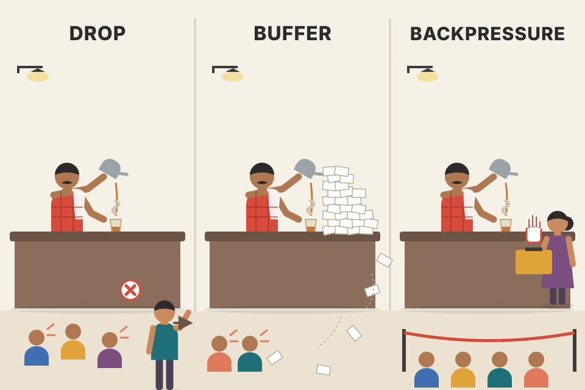
A chai stall at rush hour. The chaiwala makes 3 cups a minute, customers ask for 5. He can (a) drop: ignore whoever shouts after the counter is full; (b) buffer: take every order on slips and let the pile grow until the slips fall off the table; (c) backpressure: the cashier stops selling tokens until cups are free, so customers wait outside. Where it breaks: people leave a long queue on their own; messages just sit there, which is why unbounded buffers can eat all memory.
If the producer rate stays above the consumer rate, something has to give: either data (drop), memory/disk (buffer) or the producer's speed (backpressure). Buffering only postpones the decision; it's great for short bursts but not for a permanent mismatch.
Several messaging systems send messages directly over the network between producers and consumers, with no intermediary node:
Limits. These work well where designed for, but the application code must be aware that messages can be lost. They tolerate only limited faults: even if the protocol detects and re-sends lost packets, it usually assumes producers and consumers are always online.
A payment gateway calls a shop's webhook directly. Press Next to watch what happens when the shop goes offline and then the gateway crashes.
A cricket commentator on the radio. Everyone tuned in hears every ball, instantly (low latency). If your radio was off during the 14th over, that over is gone for you; the commentator doesn't repeat it. A webhook is like a friend who promised to phone you when the match ends: if your phone is switched off, or your friend's phone dies, you never hear. Where it breaks: UDP market-feed protocols do let you ask "repeat packet 1042", as long as the producer still remembers it.
Durability needs somebody to hold the message until it's safely received. In direct messaging only the producer can, and only in memory. That's why the next idea, the broker, moves that responsibility to a dedicated server.
A widely used alternative: send messages through a message broker (also called a message queue), which is essentially a kind of database optimized for handling message streams. It runs as a server; producers and consumers connect to it as clients. Producers write messages to the broker; consumers read them from the broker.
Send messages, take the consumer offline, send more, bring it back. Compare what each consumer ends up with.
Your building's security desk that accepts courier parcels. The courier (producer) hands the parcel to the guard (broker), gets a signature and leaves; he doesn't wait for you to open it (asynchronous). If you're away on holiday, the parcels pile up at the desk (unbounded queue) and you collect them when you return. Where it breaks: a classic broker throws the parcel away once you sign for it, so a second flatmate can't later ask for the same parcel (plate 9).
A broker separates "message accepted" from "message processed". The producer's latency is just the time to write to the broker (and maybe to disk/replicas). Consumers can be slow, crash or restart without the producer noticing.
Some brokers can even take part in two-phase commit using XA (eXtended Architecture, the X/Open standard for distributed transactions) or JTA (Java Transaction API) (Ch.9 "Distributed transactions in practice"). That makes them quite database-like. But there are important practical differences:
| Topic | Database | Traditional message broker |
|---|---|---|
| How long data lives | kept until explicitly deleted | deleted automatically once delivered to consumers → not suitable for long-term storage |
| Working set size | can be large | assumes queues are short. If many messages must be buffered (slow consumers, maybe spilling to disk), each message takes longer and overall throughput can degrade |
| Choosing data | secondary indexes, many ways to search | subscribe to a subset of topics matching a pattern. Different mechanisms, same goal: the client selects the part of the data it cares about |
| Changes | query = point-in-time snapshot; if someone later changes the data you don't find out unless you query again (poll) | no arbitrary queries, but they notify clients when data changes (new messages) |
This is the traditional view of message brokers, captured in standards like JMS (Java Message Service) and AMQP (Advanced Message Queuing Protocol), and implemented by RabbitMQ, ActiveMQ, HornetQ, Qpid, TIBCO Enterprise Message Service, IBM MQ and Azure Service Bus.
Follow one queue of orders and see each of the book's four broker-vs-database differences happen to it.
Library vs post office, above. Where it breaks: a log-based broker (plate 10) is a post office that photocopies every letter into a permanent register, blurring the line again.
Brokers are optimized for a small, fast-moving working set kept in memory. A long backlog pushes them off that happy path (disk spills, bigger data structures), which is why their throughput can fall exactly when you need it most.
When several consumers read the same topic, two main patterns are used:
The two can be combined: two separate groups each subscribe to a topic, so each group as a whole gets all messages, but within a group only one node gets each message.
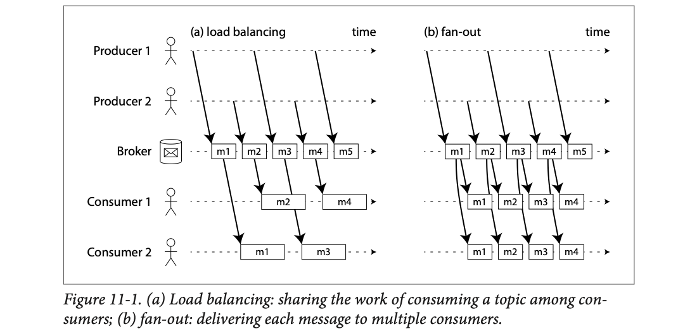
Each horizontal dotted line is one actor over time (left to right): Producer 1, Producer 2, the Broker, Consumer 1, Consumer 2. Slanted arrows from producers drop messages m1…m5 onto the broker's line, alternating between the two producers. In (a) load balancing, each broker box has one arrow going down: m1 and m3 go to Consumer 2, m2 and m4 to Consumer 1. Each consumer's box is wide because processing takes time, and while one is busy the other takes the next message. In (b) fan-out, each broker box has two arrows down: both consumers receive m1, m2, m3, m4. (m5 is still on the broker at the right edge in both panels.)
Messages m1–m6 arrive. Consumers C1 and C2 are in group A; C3 is alone in group B (modelled).
| Message | Load balancing (group A) | Fan-out (C1, C2 each) | Combined: A shares, B gets all |
|---|---|---|---|
| m1 | C1 | C1 + C2 | C1 · C3 |
| m2 | C2 | C1 + C2 | C2 · C3 |
| m3 | C1 | C1 + C2 | C1 · C3 |
| m4 | C2 | C1 + C2 | C2 · C3 |
| m5 | C1 | C1 + C2 | C1 · C3 |
| m6 | C2 | C1 + C2 | C2 · C3 |
| Total work | 3 each | 6 each | A: 3 each · B: 6 |
Load balancing = the Swiggy dispatcher: each order goes to one free delivery rider; more riders means more orders handled. Fan-out = the society WhatsApp group: every announcement reaches every member. Combined = the announcement is sent to every department (security, housekeeping, accounts), and inside each department one person picks it up. Where it breaks: riders choose orders themselves; a broker assigns messages, possibly arbitrarily.
Load balancing gives throughput (N workers ≈ N× capacity for expensive messages). Fan-out gives independence (adding a new kind of consumer doesn't touch the others). Kafka's "consumer groups" (plate 11) are exactly the combined pattern: fan-out between groups, load balancing within a group.
Consumers can crash any time: the broker may deliver a message that the consumer never processes, or processes only partly before crashing. To avoid losing it, brokers use acknowledgements (acks): the client must explicitly tell the broker when it has finished processing a message, so the broker can remove it from the queue.
If the connection to a client closes or times out without an ack, the broker assumes the message wasn't processed and delivers it again to another consumer. (Note: the message might actually have been fully processed and only the ack got lost in the network. Handling that case needs an atomic commit protocol, Ch.9.)
Effect on ordering. Combined with load balancing, redelivery changes message order. In Figure 11-2 consumers mostly process messages in the order producers sent them. But consumer 2 crashes while processing m3, at the same time consumer 1 is processing m4. The unacknowledged m3 is redelivered to consumer 1, so consumer 1 processes m4, m3, m5. So m3 and m4 are not delivered in the order producer 1 sent them.
Even if the broker otherwise tries to keep order (as both JMS and AMQP require), load balancing + redelivery inevitably reorders messages. That's fine if messages are completely independent, but matters if there are causal dependencies between them (as we'll see later in the chapter).
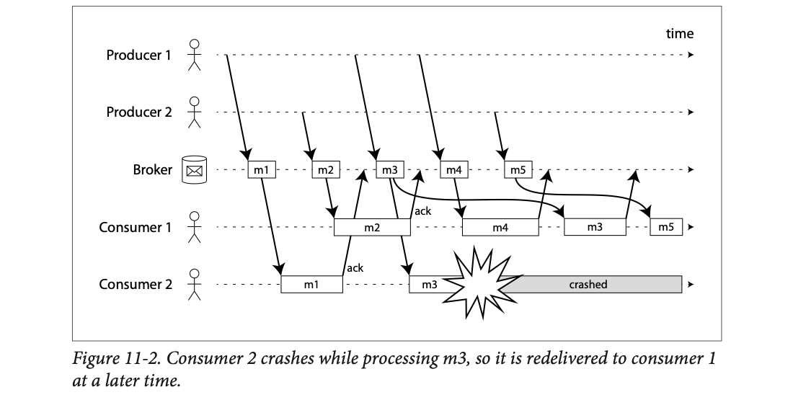
Same five lanes as Figure 11-1. Follow consumer 2's lane (bottom): it gets m1, processes it, and an "ack" arrow goes back up to the broker. Then it gets m3, and a starburst marks the crash; the grey bar "crashed" shows it's dead from then on, so no ack for m3 ever arrives. Consumer 1's lane: it processes m2 (ack), then m4, then the broker sends m3 again (the long curved arrow from m3 on the broker), then m5. Read consumer 1's boxes left to right: m2, m4, m3, m5. Out of order.
Why does reordering matter? Make the messages in Figure 11-2 concrete. Producer 1 sends, for the same user:
Consumer 2 crashes while handling m3. Consumer 1 gets m4 first: "change email of account #77" fails, because #77 doesn't exist yet. Then m3 arrives and creates #77 with the old email. The two messages have a causal dependency (m4 only makes sense after m3), so the reorder breaks things. If m3 and m4 were about two unrelated users, the order wouldn't matter at all.
A bank has two tellers taking tokens in order. Teller 2 is handling token 3 when she faints. The manager waits a bit, sees token 3 wasn't stamped "done", and gives it to Teller 1, who has meanwhile already served token 4. Token 3 is now served after token 4. If token 3 was "open account" and token 4 was "deposit into that account", the deposit was attempted first. Where it breaks: a real customer can wait in line; a crashed consumer may have half-done the work (e.g. sent an email) before fainting, so the redelivery repeats that side effect.
The broker only knows "acked" or "not acked". A missing ack could mean "crashed before doing it", "crashed halfway" or "did it but the ack was lost" (the Ch.8 "no reply" problem). Redelivery picks safety (don't lose) over uniqueness (might process twice) and over order.
Sending a packet or calling a network service is normally a transient operation that leaves no permanent trace. You could record it (packet capture, logging), but we don't usually think of it that way. Even brokers that write messages durably to disk delete them soon after delivery, because they're built around a transient messaging mindset.
Databases and filesystems take the opposite view: anything written is expected to be permanently recorded, at least until someone explicitly deletes it.
This difference in mindset matters a lot for derived data. A key feature of batch processing (Ch.10) is that you can run a job again and again, experimenting with processing steps, without risk of damaging the input (the input is read-only). Not so with AMQP/JMS messaging: receiving a message is destructive if processing causes it to be deleted from the broker, so you can't run the same consumer again and get the same result.
Also, a new consumer added to a messaging system usually only gets messages sent after it registered; earlier ones are already gone. With files and databases, a new client can read data written arbitrarily far in the past (if not overwritten or deleted).
The question: why not a hybrid that combines the durable storage of databases with the low-latency notifications of messaging? That is the idea behind log-based message brokers.
| AMQP/JMS broker | Database / file | Log-based broker (goal) | |
|---|---|---|---|
| Reading destroys data? | yes | no | no |
| New reader sees the past? | no | yes | yes (within retention) |
| Notifies on new data? | yes | no (poll) | yes |
Three orders (₹500, ₹450, ₹500) go into a classic AMQP queue and into a log. Then we fix a bug and run again.
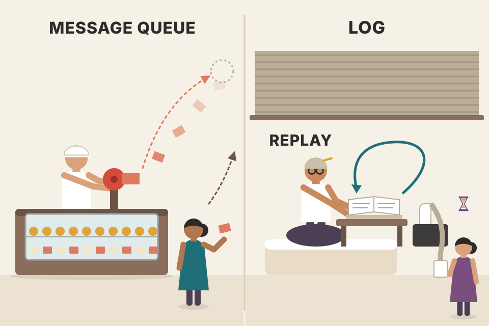
A classic broker is a tear-off token roll at a sweet shop: once a token is torn off and handed over, it's gone. A log is the shop's bill book with carbon copies: every bill stays in the book, and the accountant can sit down any evening and re-add the whole month. Where it breaks: the bill book eventually fills up and old books get archived (plate 13).
If input is never modified by reading, then processing becomes a pure function from input to output. That's what made batch jobs safe to re-run, and it's what a log gives streams.
A log is simply an append-only sequence of records on disk. We've seen logs before: log-structured storage engines and write-ahead logs (Ch.3), and replication logs (Ch.5).
The same structure makes a message broker: a producer sends a message by appending it to the end of the log; a consumer receives messages by reading the log sequentially. When a consumer reaches the end, it waits for a notification that a new message was appended. The Unix tool tail -f, which watches a file for appended data, works essentially like this.
To scale beyond what one disk can handle, the log is partitioned (Ch.6). Different partitions live on different machines, and several partitions together form a topic.
Within each partition the broker gives every message a monotonically increasing sequence number, the offset. That makes sense because a partition is append-only, so messages within a partition are totally ordered. There is no ordering guarantee across different partitions.
Apache Kafka, Amazon Kinesis Streams and Twitter's DistributedLog work like this. Although they write every message to disk, they reach millions of messages per second by partitioning across many machines, and they get fault tolerance by replicating messages.
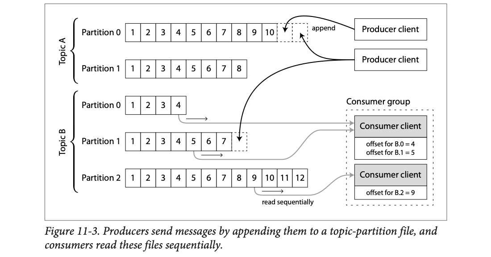
Each row of numbered boxes is one partition, a file on disk; numbers are offsets. Topic A has 2 partitions (0 has offsets 1–10, 1 has 1–8). Topic B has 3 partitions (0: 1–4, 1: 1–7, 2: 1–12). The dashed empty boxes at the right end of A.0 and B.1 are the next slot being appended by the two producer clients (black arrows "append"). On the right is a consumer group reading Topic B. The first consumer client is assigned partitions B.0 and B.1 and remembers "offset for B.0 = 4" and "offset for B.1 = 5". The second is assigned B.2 with "offset for B.2 = 9". The grey arrows labelled "read sequentially" start at those offsets and move right. Every partition goes to exactly one consumer in the group.
The partition is chosen from the message key (here: a tiny hash, key → partition). Same key → same partition → same order. Consumer C1 owns P0 and P1; C2 owns P2 (like the figure).
Topic orders with 3 partitions; partition = hash(key) mod 3 (modelled hashes).
| Send | Key | hash mod 3 | Lands at |
|---|---|---|---|
| 1 | alice | 1 | P1 offset 0 |
| 2 | bob | 0 | P0 offset 0 |
| 3 | alice | 1 | P1 offset 1 |
| 4 | chai | 2 | P2 offset 0 |
| 5 | alice | 1 | P1 offset 2 |
All of alice's messages are in order inside P1. But nobody can say whether "bob @P0 offset 0" came before or after "chai @P2 offset 0": there is no order across partitions.
Indian Railways' reservation chart for each coach is a partition: names are written line by line, numbered 1, 2, 3… (offsets). A train (topic) has many coaches, so many clerks can write at once. Within one coach, order is clear; across coaches there's no "who booked first". A TTE (consumer) checking coaches S1 and S2 keeps a pencil mark: "I've checked up to line 4 in S1 and line 5 in S2". Where it breaks: chart lines can be crossed out; a log is never edited, only appended.
Disks are very fast at sequential writes and reads, and an append-only file is the most sequential thing possible. Partitioning multiplies disks and machines; ordering is only promised where it's cheap (one partition, one writer position). Choosing the partition by key (e.g. user ID) keeps all of one user's events in order.
Fan-out is trivial with a log: several consumers read the same log independently without affecting each other. For load balancing within a group of consumers, the broker assigns entire partitions to nodes in the consumer group instead of assigning individual messages.
Each client then consumes all messages in its assigned partitions, typically sequentially and single-threaded. This coarse-grained load balancing has downsides:
You can make two consumers share one partition: both read every message, but one processes only even-numbered offsets and the other only odd ones. Or spread processing over a thread pool, but that complicates consumer offset management. In general, single-threaded processing of a partition is preferable.
Which to choose?
| Situation | Better fit |
|---|---|
| Messages expensive to process, want to parallelize message by message, order not so important | JMS/AMQP-style broker |
| High throughput, each message fast to process, order important | Log-based broker |
A topic has 4 partitions. You start 6 consumers in one group, hoping for 6× speed.
Only 4 can work, because each partition goes to exactly one consumer. Max parallelism = number of partitions.
Head-of-line blocking: in P2, messages usually take 10 ms, but one message takes 5 s (say, a huge image). The 500 messages queued behind it in P2 wait those 5 s, even though C1, C2 and C4 are free. In a JMS/AMQP broker, other consumers would simply take the next messages.
A toll plaza with 4 lanes (partitions). You can post at most 4 useful toll collectors (consumers); a 5th has no lane and just stands there. If one truck in lane 1 argues about change (a slow message), every car behind it in lane 1 waits, even though lanes 2–4 are moving: head-of-line blocking. Where it breaks: cars can switch lanes; messages can't leave their partition.
Assigning partitions instead of messages means the broker never tracks per-message state, and order inside a partition is preserved for free. The price is that parallelism is fixed by the partition count you chose when creating the topic.
A partition is read in order, so it's easy to tell what was processed. Every message with an offset less than the consumer's current offset is done; every message with a greater offset hasn't been seen. So the broker doesn't track an ack for every message; it just periodically records consumer offsets. Less bookkeeping, plus chances for batching and pipelining, raise throughput.
This offset is very similar to the log sequence number in single-leader database replication (Ch.5 "Setting up new followers"). There, the log sequence number lets a follower that got disconnected reconnect and resume without skipping writes. Exactly the same here: the broker acts like a leader database, and the consumer like a follower.
If a consumer node fails, another node in the group is assigned its partitions and starts at the last recorded offset. If the failed consumer had processed later messages but not yet recorded their offset, those messages are processed a second time after the restart. (Ways to deal with this come later, plates 48–51.)
Consumer A reads partition 0. The broker's last recorded offset for A says "next to read = 1044" (so 0–1043 are done). A processes 1044, 1045, 1046, 1047, then crashes before recording a new offset.
Consumer B takes over partition 0 and starts at the recorded offset, 1044. Messages 1044–1047 get processed twice (4 duplicates). Nothing is lost, but if each message sent an email, 4 customers get the email twice. The book returns to this in the fault-tolerance plates (48–51).
Reading a long novel with a bookmark. You don't tick every page; the bookmark says "read up to page 120". If you read pages 121–135 on the train but forget to move the bookmark, and your friend picks up the book, they start at 120 and re-read 121–135. Where it breaks: re-reading a page is harmless; re-processing "charge customer ₹500" is not, unless it's idempotent.
Recording the offset is a small write (one number per partition per group), done every so often. The gap between "work done" and "offset saved" is exactly the window in which a crash causes duplicates: at-least-once delivery.
If you only ever append, you eventually run out of disk. To reclaim space, the log is split into segments, and from time to time old segments are deleted or moved to archive storage. (A smarter way to free space, log compaction, comes in plate 21.)
So if a slow consumer falls so far behind that its offset points into a deleted segment, it misses messages. The log is effectively a bounded-size buffer that discards old messages when full, also called a circular buffer or ring buffer. But because it's on disk, it can be very large.
Back-of-the-envelope (book's numbers, at the time of writing): a typical large hard drive holds 6 TB and writes sequentially at 150 MB/s. Writing at full speed, it fills in about 11 hours. So the disk can buffer ~11 hours of messages before overwriting old ones. The ratio stays the same with many disks and machines. In practice deployments rarely use the full write bandwidth, so the log can usually keep several days or even weeks of messages.
Defaults are the book's numbers. Change the utilization to see why real systems keep days or weeks.
Why the ratio stays the same: put 10 such disks in a cluster. Capacity = 60 TB, but full-speed writes = 10 × 150 = 1,500 MB/s. 60,000,000 ÷ 1,500 = 40,000 s again. More machines buy more throughput, not more hours (at full speed).
Real-world use modelled: if you only write at 15% of bandwidth (22.5 MB/s), 6,000,000 ÷ 22.5 ≈ 266,700 s ≈ 3.1 days. At 3%, about 15 days. That's how "several days or even weeks" comes about.
A CCTV recorder in a shop keeps the last 30 days and overwrites the oldest footage. If police ask for footage from 2 months ago, it's gone. A bigger hard disk, or a quieter camera (lower bitrate), means more days kept. Where it breaks: CCTV loops on a fixed schedule; Kafka retention is set per topic by time or size.
Buffer time = capacity ÷ write rate. Both scale together when you add machines (more disks, but also you'd spread the same traffic), so the ratio is what matters. Deleting whole segment files is cheap: no rewriting, just unlink a file.
In this edition this paragraph sits inside "Disk space usage"; it gets its own plate here because it answers question 1 of plate 3 for logs.
Log-based brokers are a form of buffering with a large but fixed-size buffer (bounded by disk). You can monitor how far a consumer is behind the head of the log (its lag) and raise an alert if it falls behind. Because the buffer is large, there is enough time for a human to fix the slow consumer and let it catch up before it starts missing messages.
Even if a consumer does fall too far behind, it only affects itself; it does not disrupt the service for other consumers. That's a big operational advantage.
Producer: 1,000 msg/s. Slow consumer: 700 msg/s. Retention: 48 hours.
An alert at "lag > 1,000,000" fires after ~55 minutes. An engineer has days, not seconds, to add capacity or fix the bug. Meanwhile a fast consumer of the same topic stays at lag ≈ 0, untouched.
A dabbawala team: one slow walker falls behind with his tiffins, but the other walkers' deliveries aren't delayed by him. The supervisor sees his pile growing and sends help long before lunch gets cold. Where it breaks: once the retention limit passes, the oldest "tiffins" are thrown away, not delivered late.
Each consumer only owns an offset; the log is shared and read-only. A slow reader can't slow down writers or other readers. Contrast a classic broker, where a huge backlog sits in the broker itself and degrades it for everyone (plate 6).
With AMQP/JMS brokers, processing and acknowledging is destructive (the message is deleted). In a log-based broker, consuming is like reading a file: a read-only operation that doesn't change the log.
The only side effect of processing (apart from the consumer's output) is that the consumer offset moves forward. And the offset is under the consumer's control, so you can change it: e.g. start a copy of a consumer with yesterday's offsets and write output to a different location, to re-process the last day of messages. You can repeat this any number of times, with different processing code each time.
This makes log-based messaging more like batch processing: derived data is cleanly separated from input data by a repeatable transformation. It allows more experimentation and easier recovery from errors and bugs, making it a good tool for integrating data flows within an organization.
The log holds a day of shop events. v1 of the "daily revenue" consumer has a bug: it ignores refunds. Run v1, then rewind to offset 0 and run v2 into a new output table.
| Offset | Event | v1 (ignores refunds) | v2 (fixed) |
|---|---|---|---|
| 0 | sale ₹500 | 500 | 500 |
| 1 | sale ₹800 | 1,300 | 1,300 |
| 2 | refund ₹300 | 1,300 ✗ | 1,000 ✓ |
| 3 | sale ₹200 | 1,500 | 1,200 |
Modelled numbers. v2 reads the same four events from offset 0 into a new table revenue_v2. Compare the two, then point the dashboard at v2. The log itself never changed.
A cricket match on Hotstar replay: the broadcast (log) is recorded. A new analyst can rewind to ball 1 and count boundaries with a different method; the match itself doesn't change, and the live commentary team (other consumers) isn't disturbed. Where it breaks: replay only works for as long as the recording is kept (retention).
Output = f(log). Change f, re-run from offset 0, compare old and new outputs side by side, then switch over. Same "immutable input, derived output" contract that made MapReduce safe.
Log-based brokers took ideas from databases (durable, ordered storage) and applied them to messaging. We can also go the other way: take ideas from messaging and streams and apply them to databases.
An event is a record of something that happened. That "something" can be a user action (typing a search query), a sensor reading, or a write to a database. The fact that something was written to a database is itself an event that can be captured, stored and processed. So the link between databases and streams is deeper than "both store logs on disk"; it's fundamental.
This section first looks at a problem in heterogeneous data systems (many different kinds of store), then solves it by bringing event-stream ideas to databases.
A leader turns writes into a log; two followers apply it. Watch them end in the same state, and see the one way this can go wrong.
A chess game sent by post: each player keeps their own board. Only the moves ("e2–e4") travel. Apply the same moves in the same order and both boards look identical, without ever sending the board itself. Where it breaks: chess moves are always deterministic; database code that calls NOW() or random numbers isn't, unless the leader logs the result.
State is a function of (initial state, ordered list of events). If you can share the ordered list, you can share the state. The rest of this section exploits that.
No single system meets all storage, querying and processing needs. Most non-trivial web apps combine several: an OLTP (online transaction processing) database for user requests, a cache for common requests, a full-text index for search, a data warehouse for analytics. Each has its own copy of the data in its own representation, optimized for its job.
Since the same data lives in many places, they must be kept in sync: update an item in the database and it must also change in the cache, search index and warehouse. For warehouses this is usually ETL (extract–transform–load, Ch.3): take a full copy of the database, transform it, bulk-load it. A batch process.
If periodic full dumps are too slow, a common alternative is dual writes: application code explicitly writes to each system when data changes, e.g. write to the database, then update the search index, then invalidate cache entries.
Problem 1: a race condition (Figure 11-4). Two clients concurrently update item X: client 1 sets it to A, client 2 to B. Each writes first to the database, then to the search index. Unlucky timing interleaves them: the database sees A then B (final B); the search index sees B then A (final A). The two systems are now permanently inconsistent, though no error occurred.
Unless you add a concurrency-tracking mechanism such as version vectors (Ch.5 "Detecting concurrent writes"), you won't even notice that concurrent writes happened; one value silently overwrites the other.
Problem 2: partial failure. One write may fail while the other succeeds. That's a fault-tolerance problem rather than a concurrency one, but it also leaves the systems inconsistent. Making sure both succeed or both fail is the atomic commit problem, expensive to solve (Ch.9 2PC).
Why it happens. With one replicated database and a single leader, the leader decides the order of writes, so state machine replication works. In Figure 11-4 there is no single leader: the database may have a leader and the search index may have a leader, but neither follows the other, so conflicts can occur (like Ch.5 multi-leader replication). It would be better if there were really one leader, say the database, and the search index were a follower of it. Is that possible?
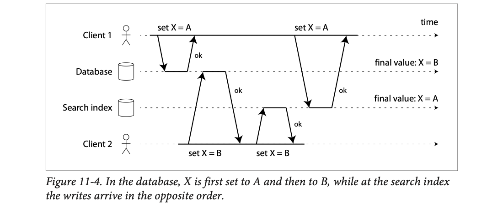
Four lanes: Client 1 (top), Database, Search index, Client 2 (bottom); time goes right. Client 1's first arrow "set X = A" hits the database first (ok). Then client 2's "set X = B" hits the database (ok). Client 2 then quickly writes "set X = B" to the search index (ok). Only after that does client 1's second "set X = A" reach the search index (ok), because client 1 was slow between its two writes. Labels on the right: database final value X = B, search index final value X = A. Every request said "ok"; the data is still wrong.
Pick an interleaving of the four writes (C1 = set A, C2 = set B; DB = database, IX = search index), or make one write fail.
A shop stores product #9's price in a database and a search index. Two admins edit it at the same moment:
| Step | Database | Search index |
|---|---|---|
| Admin 1 writes ₹500 to DB | ₹500 | – |
| Admin 2 writes ₹450 to DB | ₹450 | – |
| Admin 2 writes ₹450 to index | ₹450 | ₹450 |
| Admin 1 writes ₹500 to index | ₹450 | ₹500 |
A customer filters "under ₹480": the index says ₹500, so product #9 is hidden, while the product page (from the DB) says ₹450. No error was raised and nobody notices. Partial failure version: the DB write succeeds and the index write times out; the new product never appears in search at all.
Two family members update the address for a parcel. Each one calls Amazon and then calls the courier. Mummy says "Flat 12", Papa says "Flat 21". Amazon hears Mummy then Papa (keeps 21). The courier hears Papa then Mummy (keeps 12). Both said "OK, noted". The parcel goes to the wrong flat and no one knows why. Where it breaks: people would eventually phone back to confirm; software silently trusts the "ok".
Each system orders writes by its own arrival time. Two independent orderings of the same concurrent writes have no reason to agree. Fix = one place decides the order (a leader), and everybody else applies that order: that's CDC (next plate).
The trouble with most databases' replication logs: for a long time they were seen as an internal implementation detail, not a public API. Clients were meant to query through the data model and query language, not parse replication logs.
For decades many databases had no documented way to get the log of changes written to them. So it was hard to take every change and replicate it to a different storage technology like a search index, cache or warehouse.
More recently, interest has grown in change data capture (CDC): observing all data changes written to a database and extracting them in a form that can be replicated to other systems. It's especially interesting if changes are available as a stream, immediately as they are written.
Example: capture the changes in a database and continually apply them to a search index. If the changes are applied in the same order, the search index will match the database. The search index and other derived systems are just consumers of the change stream.
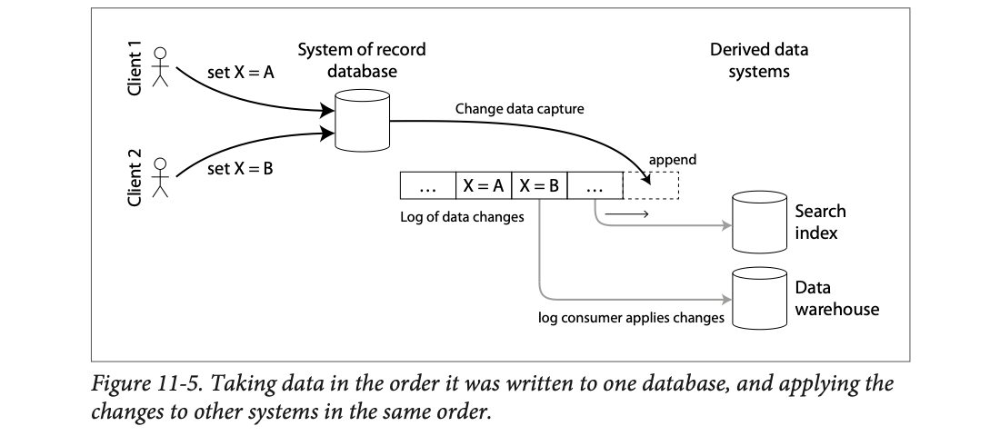
Left: Client 1 ("set X = A") and Client 2 ("set X = B") write only to the system of record database. The arrow "Change data capture" takes the database's changes and appends them to the "Log of data changes": … X = A, X = B, … in exactly the order the database applied them. The dashed box is the next append slot. Grey arrows ("log consumer applies changes") carry the log to the derived data systems on the right: Search index and Data warehouse. Both see A then B, so both end at B, just like the database.
Clients write to the database only. Consumers apply the change log at their own pace. Try "C2 writes first" vs "C1 writes first"; then let each consumer catch up.
In a school, only the class teacher's attendance register is the truth (system of record). The office, the canteen and the bus coordinator don't take their own attendance; each gets a photocopy of the register's daily changes, in order. They may get it a bit late, but they never disagree for long. Where it breaks: if the canteen is slow, it serves lunch to yesterday's list for a while (replication lag).
CDC turns a multi-leader mess into single-leader replication across different technologies. The database's own commit order becomes the global order; consumers are deterministic replayers of that order.
The log consumers are derived data systems (Part III intro): the data in the search index and warehouse is just another view onto the data in the system of record. CDC ensures every change in the system of record also shows up in derived systems, so they hold an accurate copy.
In essence, CDC makes one database the leader (the one changes are captured from) and turns the others into followers. A log-based message broker is well suited to carry change events from the source database, since it preserves message order (avoiding the reordering of Figure 11-2).
| How to capture | How | Downside |
|---|---|---|
| Database triggers (Ch.5 "Trigger-based replication") | register triggers that observe all changes to tables and add an entry to a changelog table | fragile; significant performance overhead |
| Parsing the replication log | read the database's own WAL (write-ahead log, PostgreSQL) / binlog (MySQL) / oplog (MongoDB) | more robust, but has challenges such as handling schema changes |
Used at scale: LinkedIn's Databus, Facebook's Wormhole, Yahoo's Sherpa. Bottled Water does CDC for PostgreSQL using an API that decodes the write-ahead log; Maxwell and Debezium do similar for MySQL by parsing the binlog; Mongoriver reads the MongoDB oplog; GoldenGate does it for Oracle.
Like brokers, CDC is usually asynchronous: the system-of-record database doesn't wait for consumers to apply a change before committing. Good: adding a slow consumer doesn't slow down the system of record. Bad: all the replication-lag issues apply (Ch.5).
Since this edition, Debezium has grown to cover PostgreSQL (via logical decoding), SQL Server, Oracle, MongoDB and more, and is the most common open-source CDC tool feeding Kafka.
One new product row, captured by triggers and by log parsing, then shown arriving late in the search index.
Triggers are like asking every cashier to also write each sale in a second notebook: slows them down and sometimes they forget. Log parsing is like reading the till's own printed roll at the end: nothing extra for cashiers, but if the till's print format changes (schema change) your reader must adapt. Where it breaks: a till roll is printed after the fact; a WAL is written before the commit is acknowledged.
The replication log already contains every committed change in commit order, since the database needs it for crash recovery and replicas. CDC just exposes it. Asynchrony is what keeps the source database's write latency unaffected.
With the log of all changes ever made, you could rebuild the entire database by replaying it. But often keeping every change forever needs too much disk, and replaying would take too long, so the log is truncated.
Building a new full-text index, say, needs a full copy of the database; recent changes alone aren't enough, since they'd miss items not updated recently. So without the full log history, you start from a consistent snapshot (as in Ch.5 "Setting up new followers").
The snapshot must correspond to a known position (offset) in the change log, so you know where to start applying changes after loading the snapshot. Some CDC tools have this built in; others leave it as a manual step.
Joining a WhatsApp group with years of history: rather than scrolling through 50,000 old messages, someone sends you the pinned summary as of message #1000, and you read only from #1001 onwards. If the summary doesn't say "as of #1000", you don't know where to start: you'd either skip messages or read some twice. Where it breaks: a chat summary is fuzzy; a database snapshot must be exactly consistent at that offset.
New state = snapshot(at offset n) + apply(log from n+1). If the snapshot isn't consistent with n, changes are lost or double-applied. Databases achieve this with MVCC (multi-version concurrency control, Ch.7) snapshots that record the log position they correspond to.
If you can only keep limited log history, you need the snapshot process every time you add a new derived system. Log compaction is a good alternative.
We met it in Ch.3 "Hash indexes" (Figure 3-2). The principle: the storage engine periodically looks for log records with the same key, throws away duplicates and keeps only the most recent update for each key. Compaction and merging run in the background.
The same works for log brokers and CDC: if every change has a primary key and every update replaces the previous value for that key, keeping just the latest write per key is enough.
Now to rebuild a derived system such as a search index, start a new consumer from offset 0 of the compacted topic and scan all messages. The log is guaranteed to hold the most recent value for every key (and maybe some older ones), i.e. a full copy of the database, without taking another snapshot of the source database.
Apache Kafka supports log compaction. As we'll see, this lets a broker be used for durable storage, not just transient messaging.
A CDC topic keyed by user id. Before compaction (offset: key=value):
After compaction (greyed records above are discarded), only the newest record per key survives:
A new search index reading from offset 0 now sees u1 in Mumbai, u2 deleted, u3 in Agra, which is exactly the database's current contents. Scale it up: 10,000,000 writes to 300,000 users still compact down to about 300,000 records, because space depends on the current data, not on how many writes ever happened.
Your phone's contacts sync log: "Ravi: 98xxx", "Ravi: 99xxx", "Priya: 90xxx", "Ravi: 97xxx", "delete Priya". A new phone doesn't need every edit since 2015; it only needs the latest number per person, and to know Priya was deleted. Compaction keeps exactly that. Where it breaks: the tombstone itself must stay for a while, or a new phone wouldn't know to delete an old Priya copy; (beyond the book) Kafka keeps tombstones for a configurable time before dropping them.
For "full new value per key" events (CDC), the latest event per key fully determines current state, so older events are redundant. (Beyond the book:) compaction rewrites old segments into new ones without the superseded records, preserving offsets of the survivors so consumers' positions stay valid.
Increasingly, databases support change streams as a first-class interface, instead of the retrofitted, reverse-engineered approach CDC has long been:
Later, MongoDB added official "change streams", PostgreSQL's logical replication became standard, and DynamoDB Streams / Cosmos DB change feed made this a normal cloud feature.
Old way: to know when your train's platform changes, you stand under the board and watch (or bribe someone to read the station's internal radio). New way: IRCTC sends you an SMS with the platform change. Where it breaks: the SMS covers only what the provider chose to expose.
When change streams are an official API, the format is stable and documented, and the database can guarantee consistency between snapshot and stream, removing most of CDC's fragility.
Event sourcing is a technique from the Domain-Driven Design (DDD) community, with parallels to what we've discussed. It's covered briefly because it has useful ideas for streaming systems.
Like CDC, event sourcing stores all changes to application state as a log of change events. The big difference is the level of abstraction:
| Change data capture | Event sourcing | |
|---|---|---|
| How the app uses the DB | mutable: update and delete records at will | app logic is explicitly built on immutable events written to an event log |
| Where the log comes from | extracted at a low level (e.g. parsing the replication log), so the order matches the real write order, avoiding the race of Figure 11-4 | the app writes events itself; the event store is append-only; updates/deletes discouraged or forbidden |
| Does the app know? | No: the writing application needn't be aware CDC is happening | Yes: events are carefully designed to mirror things that happened at the application level |
| Example event | UPDATE carts SET qty=2 WHERE id=7 → row image {id:7, qty:2} | ItemAddedToCart{cart:7, item:"chai", qty:1} |
Event sourcing is similar to the chronicle data model, and an event log resembles the fact table of a star schema (Ch.3 "Stars and snowflakes").
Specialized databases like Event Store support event-sourced apps, but the approach is independent of any tool: a conventional database or a log-based broker can also be used.
A user adds chai, adds a samosa, then removes the chai. Compare what CDC captures with what an event-sourced app stores.
CDC is a security camera filming the warehouse shelves: it records "shelf 7 now has 2 boxes", without knowing why. Event sourcing is the shopkeeper's own day book: "10:02 sold 1 Parle-G to Ramesh", "10:05 Ramesh returned it, damaged". The day book captures intent; the camera only captures effects. Where it breaks: the shopkeeper can forget to write something; a database log can't miss a committed write.
CDC is a technique you add to an existing app; event sourcing is a way to design the app. Both end with "an ordered log of changes from which state can be rebuilt", which is why the same streaming tools serve both.
An event log alone isn't very useful: users expect the current state, not a list of modifications. On a shopping site, users want the current contents of their cart, not an append-only list of every change they've made.
So event-sourced apps transform the log of events (how data is written) into application state suitable for showing users (how data is read). The transformation can use arbitrary logic, but it should be deterministic, so you can run it again and get the same state.
As with CDC, replaying the log reconstructs current state. But log compaction must be handled differently:
Event-sourced apps usually store snapshots of the current state derived from the log, so they needn't re-process the full log every time. That's only a performance optimization for reads and crash recovery: the intention is that the system can store all raw events forever and re-process the full log whenever needed. A reasonable assumption for all but the very largest applications.
Event log
Current state shown to the user
Replaying events 1–4 always gives the same cart (the replay is deterministic). Note that you can't compact this like CDC: "changed qty to 3" means nothing without event 1, and the "removed biscuits" event is the only record that the customer once considered biscuits.
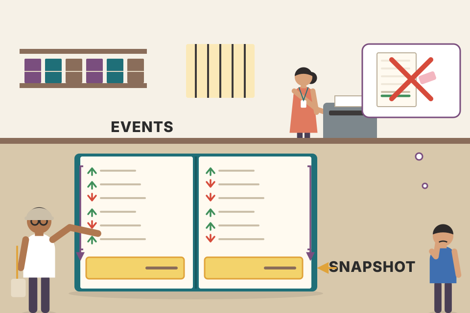
Your bank passbook lists every deposit and withdrawal; the balance at the bottom is derived by adding them up. You can't "compact" the passbook by keeping only the last entry for "salary", because the balance depends on every entry. The bank prints a balance every page (a snapshot) so it needn't re-add from the day you opened the account. Where it breaks: banks do eventually archive very old pages; event-sourced systems aim to keep everything.
CDC events are idempotent overwrites ("qty is now 2"), so only the last one per key matters. Event-sourced events are deltas or intents ("added 1"), which combine; dropping any changes the result. That's the exact reason compaction works for one and not the other.
Event sourcing distinguishes events from commands. When a user request first arrives, it is a command: it may still fail, e.g. because an integrity condition is violated. The app must first validate it can execute the command. If validation succeeds and the command is accepted, it becomes an event, which is durable and immutable.
Example: a user tries to register a username, or reserve a seat on a plane or in a theatre. The app checks the username/seat isn't taken (Ch.9 "Fault-tolerant consensus"). Once the check succeeds, it generates an event: "username X was registered by user ID Y", or "seat Z was reserved for customer W".
When the event is generated it becomes a fact. Even if the customer later changes or cancels, it remains true that they once held that seat; the change or cancellation is a separate event added later.
A consumer of the event stream is not allowed to reject an event: by the time it sees it, it's already an immutable part of the log and may have been seen by other consumers. So any validation of a command must happen synchronously, before it becomes an event.
Alternative: split the request into two events: first a tentative reservation, then a separate confirmation event once validated (Ch.9 "Implementing linearizable storage using total order broadcast"). This lets validation happen in an asynchronous process.
| Time | What arrives | Type | Result |
|---|---|---|---|
| 19:00:01 | Asha: "book F7" | command | F7 free → event SeatBooked{F7, Asha} appended |
| 19:00:02 | Bilal: "book F7" | command | F7 taken → rejected, no event |
| 19:30:00 | Asha cancels | command → event | SeatCancelled{F7, Asha} appended; the booking event stays |
Modelled. The check happens before anything is written. Once SeatBooked is in the log, no consumer may refuse it.
At a cinema counter, "I'd like seat F7" is a command; the clerk checks the screen and might say "taken". Once the ticket is printed, that's an event: a fact. If you later cancel, the cinema doesn't un-print your ticket; it issues a separate "cancellation" record. The usher at the door (a consumer) can't say "I reject this ticket": by then it's a fact. Where it breaks: ushers do turn away fake tickets; in event sourcing anything in the log is by definition genuine.
Validation needs a consistent view of current state (is the seat free?), which needs some form of serialization or consensus. Doing it before append keeps the log clean. The two-event pattern pushes that check into a single-threaded consumer that processes reservations in log order.
Batch processing benefits from immutable input files: experimental jobs can't damage them. The same principle of immutability is what makes event sourcing and CDC powerful.
We usually think of databases as storing the current state, optimized for reads and convenient for queries. State changes, which is why databases support updates and deletes. How does that fit with immutability?
Whenever state changes, it's the result of the events that changed it over time: the list of available seats is the result of the reservations processed; the account balance is the result of credits and debits; the response-time graph is an aggregation of all individual request times.
However state changes, there was always a sequence of events that caused it. Even when things are done and undone, the fact that those events happened stays true. Key insight: mutable state and an append-only log of immutable events do not contradict each other; they are two sides of the same coin. The log of all changes, the changelog, represents the evolution of state over time.
Mathematically: application state is what you get when you integrate an event stream over time, and a change stream is what you get when you differentiate the state by time (Figure 11-6). The analogy has limits (e.g. the second derivative of state doesn't seem meaningful), but it's a useful starting point.
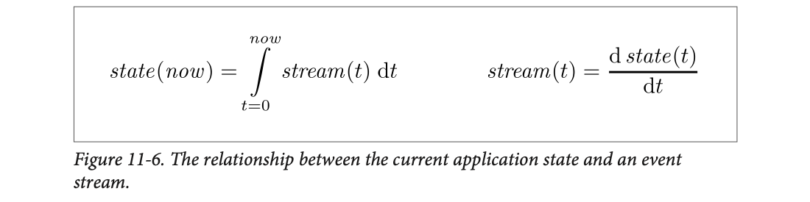
Left formula: state(now) = ∫ from t=0 to now of stream(t) dt. The ∫ sign means "add up everything from the beginning (t = 0) until now". In plain words: current state = all the changes added up, a running total. Right formula: stream(t) = d state(t) / dt. The d/dt means "how much does it change at each moment". In plain words: the stream is the change in state at each tick. Integrate (running total) to go from stream to state; differentiate (difference between consecutive values) to go back.
If you store the changelog durably, you make the state reproducible. If you treat the log of events as your system of record and any mutable state as derived from it, reasoning about data flow becomes easier. As Pat Helland puts it (paraphrased): transaction logs record every change; fast appends are the only way to change the log; so the database contents are just a cache of the latest record values in the log. "The truth is the log. The database is a cache of a subset of the log."
Bars = the event stream (credits up, debits down). Line = the state (balance) = running sum of the bars. Add events and watch the line move.
A car's odometer is the state (total km); the speedometer is the stream (km per moment). Add up speed over time and you get distance; take the change in distance per moment and you get speed. Where it breaks: "acceleration of a bank balance" (second derivative) means nothing useful for data, as the book notes.
Any state is a fold (reduce) over its event history: state = events.reduce(apply, initial). The log is the lossless form; the state is a lossy summary that's quick to query. Keep the lossless form and you can always rebuild or reinterpret the summary.
Immutability in databases is an old idea. Accountants have used it for centuries: a transaction is recorded in an append-only ledger, a log of events describing money, goods or services changing hands. Accounts like profit and loss or the balance sheet are derived by adding up the ledger's transactions.
If a mistake is made, accountants don't erase or change the wrong transaction; they add another one that compensates, e.g. a refund of an incorrect charge. The wrong entry stays forever, since it may matter for auditing. If figures derived from the wrong ledger were already published, the next period's figures include a correction. Entirely normal in accounting.
Auditability is critical in finance, but helps many other systems too. As in "Philosophy of batch process outputs" (Ch.10): if you deploy buggy code that writes bad data, recovery is much harder if the code can destructively overwrite data. With an append-only log of immutable events, it's much easier to see what happened and recover.
Immutable events also capture more information than current state. On a shopping site, a customer may add an item to the cart and remove it again. For order fulfilment the second event cancels the first, but for analytics it's useful to know the customer considered the item and decided against it. Maybe they'll buy it later, or found a substitute. The event log records this; a database that deletes removed items loses it.
A customer is charged ₹1,200 instead of ₹1,000.
| # | Ledger entry (append-only) | Amount | Balance |
|---|---|---|---|
| 1 | Order #51 charge | −1,200 | −1,200 |
| 2 | Refund: order #51 overcharge | +200 | −1,000 |
The balance is right, and an auditor can still see the mistake and its fix. An overwriting system would just show "−1,000" and the error would leave no trace. If last month's report already showed ₹1,200, this month's report carries the ₹200 correction.
The ledger above, played out entry by entry, including a report that already went out.
A school answer sheet in pen: if you make a mistake, you strike it out with a single line and write the correction next to it; the examiner can still see what you first wrote. Whitener (overwriting) is banned precisely because it hides history. Where it breaks: you'd never need to "replay" an exam answer; systems replay logs all the time.
Overwriting destroys the input to future questions you haven't thought of yet (audit, analytics, debugging). Appending keeps every option open; derived state can always be corrected by adding events and recomputing.
Separating mutable state from the immutable event log lets you derive several different read-oriented representations from the same log, just like multiple consumers of a stream (Figure 11-5).
An explicit translation step from log to database makes it easier to evolve the app. Say a new feature shows existing data in a new way. Build a separate read-optimized view from the event log. Run it alongside the existing systems, without changing them. Running old and new side by side is often easier than a complicated schema migration. When the old system is no longer needed, just shut it down.
Storing data is easy if you don't have to worry about how it'll be queried. Much of the complexity of schema design, indexing and storage engines comes from supporting particular query and access patterns (Ch.3). So you gain flexibility by separating the form in which data is written from the form in which it is read, and allowing several read views. This is command query responsibility segregation (CQRS).
Traditional schema design rests on the fallacy that data must be written in the same form as it will be queried. Debates about normalization vs denormalization (Ch.2) become largely irrelevant if you can translate from a write-optimized event log to read-optimized state: it's entirely reasonable to denormalize the read views, since the translation process keeps them up to date.
Twitter's home timelines (Ch.1 "Describing load") are an example: a cache of recent tweets by the people a user follows (like a mailbox). They're highly denormalized (your tweets are copied into the timelines of everyone following you), but the fan-out service keeps this duplicated state in sync with new tweets and new follow relationships, so the duplication stays manageable.
A restaurant's order slips (the log) are written once. From the same slips: the kitchen makes a "dishes to cook" board, the cashier makes bills per table, and the owner makes a "today's sales by dish" sheet. When the owner wants a new "busiest hour" chart, she reads through the slips again; the kitchen and cashier carry on untouched. Where it breaks: slips get thrown out at night; an event log is kept.
Each view is a deterministic consumer of the log, so each is disposable and rebuildable. Duplication across views is safe because no one edits views directly; only the log is written, and views follow it.
The biggest downside of event sourcing and CDC: consumers of the event log are usually asynchronous. So a user may write to the log, then read from a log-derived view, and not see their own write yet (Ch.5 "Reading your own writes").
The upside: deriving state from a log also simplifies some concurrency control. Much of the need for multi-object transactions (Ch.7) comes from one user action changing data in several places. With event sourcing, you can design an event as a self-contained description of a user action, so the action needs only a single write in one place: appending the event, which is easy to make atomic.
If the event log and the application state are partitioned the same way (e.g. an event for a customer in partition 3 only updates partition 3 of state), a simple single-threaded log consumer needs no concurrency control for writes: by construction it handles one event at a time (Ch.7 "Actual serial execution"). The log removes the non-determinism of concurrency by defining a serial order of events in a partition. If an event touches multiple state partitions, more work is needed (discussed later).
Transfer{from:Asha,to:Bilal,₹100}You post a photo and immediately open your profile: it's not there yet, because the "profile view" is filled by a helper who reads the post log a second later. Annoying (the downside). But the post itself was a single action, "Asha posted photo #9", written in one place, with no need to lock the profile, feed and counters together (the upside). Where it breaks: a transfer between two people in different partitions still needs coordination.
Concurrency bugs come from two writers touching shared state in unpredictable interleavings. A partitioned log gives each partition one writer (its consumer) and one order, i.e. serial execution, which is trivially serializable.
Many systems that aren't event-sourced still rely on immutability. Datomic uses immutable data structures to query snapshots of a database. That includes historical snapshots from past points in time (Ch.7 "Indexes and snapshot isolation"). Version control systems like git, Mercurial and Fossil rely on immutable data to keep file history.
Storage is now so cheap that keeping all events forever is viable for all but the very largest systems. But sometimes data must really be deleted despite immutability:
Here, appending another event saying "consider the earlier data deleted" is not enough: you want to rewrite history and pretend the data was never written. Datomic calls this excision; the Fossil version control system has a similar concept called shunning.
Truly deleting data is surprisingly hard, because copies live in many places. Storage engines, filesystems and SSDs (solid-state drives) often write to a new location rather than overwriting in place. And backups are often deliberately immutable to prevent accidental deletion or corruption. Deletion is more a matter of "making it harder to retrieve the data" than "making it impossible". Still, it's sometimes required.
Asha closes her account and asks for her phone number to be deleted. Follow every copy.
Deleting a forwarded WhatsApp message: "delete for everyone" removes it from chats, but someone may have screenshotted it, it's in a cloud backup, and a friend forwarded it to another group. You've made it harder to find, not impossible. Where it breaks: in your own systems you at least control most of the copies.
Immutability is achieved precisely by making copies instead of editing in place: log-structured storage, copy-on-write, SSD wear levelling, append-only backups. Every one of those leaves a residue that "delete" must chase.
So far: where streams come from (user activity, sensors, database writes) and how they're transported (direct messaging, brokers, event logs). What remains: what you do with a stream, i.e. process it. Broadly three options:
The rest of the chapter is about option 3. A piece of code that processes streams like this is an operator or a job. It's closely related to Unix processes and MapReduce jobs (Ch.10), with a similar dataflow: a stream processor consumes input streams read-only and writes output to a different location, append-only.
Partitioning and parallelization patterns are very similar to MapReduce and dataflow engines, so the book doesn't repeat them. Basic mapping operations (transforming, filtering records) work the same too.
The one crucial difference: a stream never ends. Consequences:
An order for ₹7,500 from Pune passes through a filter and an enrichment step, then ends in storage and in an alert.
A sugarcane juice line: cane goes in (input stream), the crusher (operator) produces juice (derived stream), the filter (another operator) cleans it, and the end goes either into bottles for the shop fridge (① storage) or straight into a customer's glass (② human). The cane never stops coming in season. Where it breaks: if the crusher jams, you can't "restart the season from the beginning".
The pipeline model is the same as Ch.10; what changes is that every operator must work incrementally and that recovery must resume from a recent point rather than from zero (plates 48–52).
Stream processing has long been used for monitoring: an organization wants an alert when certain things happen. Examples:
These need fairly sophisticated pattern matching and correlations. Other uses emerged over time; the next plates compare them: CEP (33), stream analytics (34), materialized views (35), search on streams (36), and how message passing / RPC differs (37).
A simple fraud rule watching one card's event stream.
Your bank's SMS: "Card used in Dubai 3 minutes after Bengaluru. Was this you?" That's a stream processor watching your card's event stream and matching a pattern in real time. Where it breaks: the bank sometimes blocks you on a genuine trip; pattern rules trade false alarms for missed fraud.
All monitoring uses share one need: decide now, from the events seen so far, without waiting for the day's batch. That's only possible if the processor keeps compact state about the recent past.
Complex event processing (CEP) is an approach from the 1990s for analyzing event streams, aimed at applications that need to search for certain event patterns. Just as a regular expression finds patterns of characters in a string, CEP lets you specify rules to find patterns of events in a stream.
CEP systems often use a high-level declarative query language like SQL, or a graphical UI, to describe the pattern. Queries are submitted to a processing engine that consumes input streams and internally maintains a state machine that does the matching. When a match is found, the engine emits a complex event (hence the name) with the details of the detected pattern.
The relationship between queries and data is reversed compared with normal databases. A database stores data persistently and treats queries as transient: a query arrives, the database finds matching data, then forgets the query. CEP engines do the opposite: queries are stored long-term, and events from input streams continuously flow past the queries looking for a match.
Implementations: Esper, IBM InfoSphere Streams, Apama, TIBCO StreamBase, SQLstream.
Rule (stored long-term): 3 × login_failed, then login_ok, same user, within 5 events ⇒ emit complex event "possible account takeover".
A Google Alert or a shop's CCTV operator told: "If you see the same person enter three times without buying, then head for the jewellery counter, call me." The instruction (query) stays posted on the wall; people (events) stream past the camera. Where it breaks: a human operator gets tired; a CEP engine keeps exact state for millions of patterns.
A pattern compiles to a finite automaton per key (user/card). Each event advances or resets the automaton, so memory is just "which state is each key in", not the whole history.
Another use is analytics on streams. The line between CEP and stream analytics is blurry, but as a rule analytics cares less about specific event sequences and more about aggregations and statistical metrics over many events:
Such statistics are usually computed over fixed time intervals, e.g. average queries per second to a service over the last five minutes, and their 99th percentile response time in that period. Averaging over a few minutes smooths out irrelevant second-to-second fluctuations while still giving a timely picture of traffic changes. The interval you aggregate over is a window (plate 42).
Stream analytics sometimes use probabilistic algorithms: Bloom filters for set membership (Ch.3), HyperLogLog for cardinality (count of distinct items) estimation, and various percentile estimation algorithms (Ch.1). These give approximate results but need much less memory than exact ones. That leads some people to believe stream processing is always lossy and inexact, but that's wrong: there's nothing inherently approximate about stream processing.
Open-source distributed stream frameworks built with analytics in mind: Apache Storm, Spark Streaming, Flink, Concord, Samza, Kafka Streams. Hosted services: Google Cloud Dataflow, Azure Stream Analytics.
Requests per second over 5 seconds: 8, 12, 10, 30, 10.
The one-second spike of 30 is smoothed out in the average, but a trend (twice last week's level) still shows clearly: rate, rolling average and comparison with an earlier period, the three bullets of the book.
A cricket run rate: "runs this over" jumps around (a six, then three dots), but "run rate over the last 5 overs" tells you the real trend. Comparing with "same stage of the last match" spots an unusual innings. Where it breaks: overs are fixed boundaries; real windows can also slide or follow sessions.
An exact rolling average over a window needs only the window's running sum and count. Exact distinct counts or percentiles over huge windows need memory proportional to the data, which is why sketches like HyperLogLog (a few KB for billions of items) are used when "close enough" is fine.
A stream of changes to a database can keep derived systems (caches, search indexes, warehouses) up to date (plates 16–22). These are specific cases of maintaining materialized views (Ch.3 "Data cubes and materialized views"): deriving an alternative view onto some dataset so you can query it efficiently, and updating that view whenever the underlying data changes.
Likewise, in event sourcing, application state is maintained by applying a log of events, so the app state is also a kind of materialized view. Unlike stream analytics, it's usually not enough to consider only events in some time window: building the view needs all events that ever happened (perhaps after log compaction dropped obsolete ones). In effect, a window stretching all the way back to the beginning of time.
In principle any stream processor could maintain materialized views, but keeping events forever runs counter to the assumptions of some analytics-oriented frameworks. Samza and Kafka Streams support this usage, building on Kafka's log compaction.
Compare a 5-minute analytics window with a materialized view of users' cities.
Your Aadhaar address is a materialized view: it reflects every update ever filed, not just updates from the last 5 minutes. A dashboard showing "address-change requests per hour" only needs the last hour. Where it breaks: Aadhaar doesn't keep every intermediate address forever for you to replay; a compacted log keeps at least the latest per key.
Analytics state can expire with the window; view state can't, because any key might be read at any time. That's why view maintenance needs durable, replicated local state (plate 52) and a compacted source log to rebuild from.
Besides CEP (patterns across multiple events), sometimes you need to search for individual events using complex criteria, such as full-text search queries.
Conventional search engines first index the documents, then run queries over the index. Searching a stream turns this on its head: the queries are stored, and the documents run past the queries. Simplest case: test every document against every query, which gets slow with many queries. To optimize, you can index the queries as well as the documents, narrowing down which queries might match.
Setting a "notify me" alert on 99acres/MagicBricks: "2BHK, Pune, under ₹80 lakh". Your query sits on their server; every new listing is checked against it. With "index queries by city", a Mumbai listing is only checked against Mumbai alerts, not every alert in India. Where it breaks: real full-text queries are harder to index than a city field.
Normal search: many documents, one query at a time → index documents. Stream search: many queries, one document at a time → index queries (Luwak-style "reverse search"). Same idea, mirror image.
In Ch.4 "Message passing data flow" we saw message-passing systems as an alternative to RPC, a way for services to communicate (e.g. the actor model). They're also based on messages and events, but we don't usually call them stream processors:
| Actor frameworks | Stream processing | |
|---|---|---|
| Main purpose | managing concurrency and distributed execution of communicating modules | a data management mechanism |
| Communication | often ephemeral and one-to-one | event logs are durable and multi-subscriber |
| Shape | arbitrary, including cyclic request–response | usually acyclic pipelines; every stream is the output of one particular job, derived from a well-defined set of input streams |
Cross-over: Apache Storm has distributed RPC: user queries are farmed out to nodes that also process event streams; the queries are interleaved with input events, and results can be aggregated and sent back to the user. You can also build stream processors on top of actor frameworks, but it's worth examining the fault-tolerance guarantees that gives.
The same "order → stock → billing" work, done by actors and by stream jobs.
Actors are colleagues phoning each other: "Can you check this?" "Done, here's the answer", back and forth, nothing recorded. A stream pipeline is a factory assembly line: parts flow one way, every station's output is logged, and you can re-run a batch of parts through a fixed station. Where it breaks: some factories do have return loops (Storm DRPC).
Acyclic dataflow over durable logs is what makes replay and exactly-once recovery possible. Cycles and ephemeral messages make "re-run from a checkpoint" ill-defined.
Stream processors often deal with time, especially for analytics with windows like "last five minutes". That sounds unambiguous, but it's surprisingly tricky.
In batch processing, tasks rapidly crunch a big pile of historical events. If you need a breakdown by time, you look at the timestamp embedded in each event. There's no point looking at the machine's system clock, since when the job runs has nothing to do with when the events happened.
A batch job may read a year of events in a few minutes; the timeline you care about is the year, not the minutes. Using event timestamps also makes processing deterministic: re-running on the same input gives the same result (Ch.10 "Fault tolerance").
Many stream frameworks, however, use the local system clock on the processing machine (the processing time) for windowing. Advantage: simple, and reasonable if the delay between event creation and processing is negligible. It breaks down if there's significant processing lag.
Four events happen around 10:05. A dashboard counts events in 5-minute windows. Drag the processing lag and see which window each event lands in.
At 0 s lag both clocks agree. From 5 s of lag, events B (10:04:55) and C (10:04:58) are processed after 10:05, so the processing-time count for 10:00–10:05 is wrong; at 10 s, A moves too. Re-run the job tomorrow and every processing-time window changes again; event-time windows don't.
Counting wedding gifts by when they were given vs by when you opened them. If you open all the envelopes two days later, "by opening time" says everyone gave gifts on Tuesday at 11 pm. Where it breaks: envelopes rarely carry a reliable time; events usually do, though "whose clock?" is its own problem (plate 41).
Processing time is a property of the run; event time is a property of the data. Only functions of the data are reproducible on replay.
Processing can be delayed for many reasons. Examples: network faults (Ch.8), a performance issue causing contention in the broker or processor, a restart of the stream consumer, or re-processing past events (plate 15) while recovering from a fault or after fixing a bug.
Message delays also cause unpredictable ordering. Example: a user makes one web request (handled by server A), then a second (handled by server B). A and B each emit an event, but B's event reaches the broker before A's. Stream processors see B first, then A, even though they happened in the opposite order.
The Star Wars analogy (from the book): Episode IV came out in 1977, V in 1980, VI in 1983, then I, II, III in 1999, 2002, 2005, and VII in 2015. If you watched them in release order, the order you processed them differs from the order of the story. The episode number is like the event timestamp; the date you watched is the processing time. Humans cope with such jumps; stream algorithms must be written specifically to handle timing and ordering issues.
Confusing event time and processing time leads to bad data. Say a stream processor measures requests per second. You redeploy it, it's down for a minute, and on restart it processes the backlog. Measured by processing time, it looks like a sudden anomalous spike of requests while it works through the backlog, when the real rate was steady (Figure 11-7).
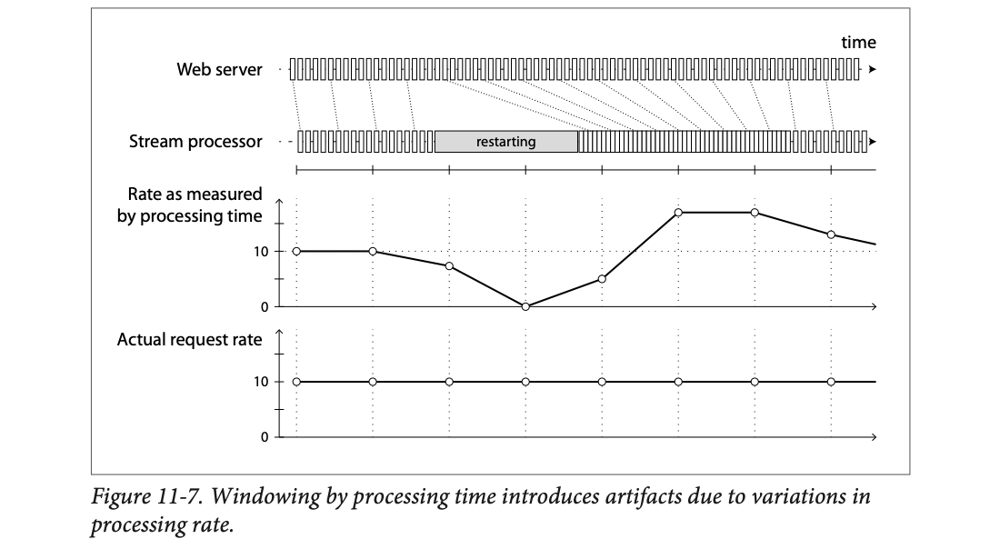
Top row "Web server": evenly spaced tick boxes = requests arriving at a steady rate. Second row "Stream processor": evenly spaced at first, then a grey "restarting" bar where nothing is processed, then the boxes are squeezed tightly together (catching up on the backlog, lots per second), then back to normal. Dotted lines connect each request to when it was processed. Third panel "Rate as measured by processing time": starts at 10, drops to 0 during the restart, then shoots up above 10 while catching up, then decays back. Bottom panel "Actual request rate": a flat line at 10 all along. The dip and the spike are artifacts of the clock you chose.
A web server gets a steady 10 requests/s (as in Figure 11-7). The stream processor is redeployed and is down for 60 s, so a backlog of 600 events builds up. After restart it catches up at 30 events/s.
A "traffic doubled!" alert at 30 req/s would be a false alarm caused only by the restart. Counting by the timestamp inside each event gives the true flat line.
A toll booth counter clicks each car as it's counted. The counting clerk takes a 10-minute tea break; cars pile up and he waves them through quickly when he's back. His "cars per minute" sheet shows zero, then a huge rush, though traffic was steady all along. If he wrote down each car's arrival time from the gate camera instead, the sheet would be flat. Where it breaks: the camera's clock can also be wrong (plate 41).
Processing-time windows measure the processor's throughput, not the world's activity. Any hiccup in the processor (GC pause, redeploy, replay) shows up as a fake change in the world.
With event-time windows, you can never be sure you've received all events for a window, or whether some are still coming.
Example: one-minute windows to count requests per minute. You've counted events stamped in the 37th minute of the hour; time moves on and most incoming events are now in the 38th and 39th minutes. When do you declare the 37th minute finished and output its count?
In general, it's impossible to be sure. You can time out and declare a window ready after seeing no new events for a while, but some events might be buffered on another machine, held up by a network interruption, and arrive later.
So you must handle straggler events that arrive after the window was declared complete. Two broad options:
Sometimes you can use a low watermark: a marker meaning "from now on there'll be no more messages with a timestamp earlier than t", and consumers wait for it to know the window is ready. But if timestamps are generated by clients, you can't be sure there are no pending events somewhere, so stragglers (older than the low watermark) are still possible.
One-minute windows. The 10:37 window has counted 1,000 requests. At 10:38:30 no new 10:37 events have come for a while, so you emit "10:37 → 1,000". At 10:41 a phone that was offline sends an event stamped 10:37:45.
| Option | What you do | Output |
|---|---|---|
| 1. Ignore | drop it; add 1 to a "dropped stragglers" metric | 10:37 → 1,000 (stays) |
| 2. Correct | recount with the straggler, publish an update (maybe retract the old value first) | 10:37 → 1,001 |
If "dropped stragglers" jumps from 2/min to 2,000/min, that's your alert that something upstream (a network partition, a stuck mobile batch) is delaying data.
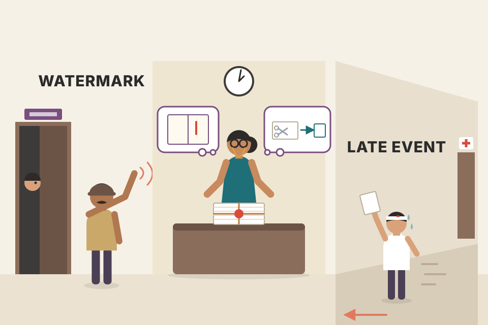
A teacher collecting exam answer sheets at 1:00 pm. She waits until the corridor is quiet, then seals the bundle. Then one student runs in from the sick room with a sheet. She can (1) refuse it and note "1 late" in the register, or (2) reopen the bundle and send a corrected count to the office. A "watermark" is the peon saying "everyone has left the building", which is reliable unless someone was hiding in the library. Where it breaks: exam rules are fixed in advance; stream policies trade accuracy against delay per use case.
Completeness in an asynchronous system is unknowable (Ch.8's "no reply" problem again). A watermark is a heuristic promise from sources; it moves output earlier at the cost of possible lateness, which you then either drop or correct.
Assigning timestamps is even harder when events are buffered at several points. Example: a mobile app reports usage events to a server. It may be used offline, buffering events on the device and sending them when it next has internet, hours or days later. To consumers, these look like extremely delayed stragglers.
The event's timestamp should really be when the user interaction happened, by the device's local clock. But a user-controlled device's clock often can't be trusted: it may be set wrong, accidentally or deliberately (Ch.8). The server's receive time is more likely accurate, but less meaningful for describing the interaction.
To adjust for wrong device clocks, log three timestamps:
Subtract (2) from (3) to estimate the offset between device and server clocks (assuming network delay is negligible compared to the required accuracy). Apply that offset to (1) to estimate when the event really happened (assuming the device clock offset didn't change between occurrence and sending).
This problem is not unique to streams; batch processing has exactly the same issue. It's just more noticeable in streaming, where we're more aware of time passing.
Times as HH:MM. The phone's clock is wrong; the server's is right.
A friend's wristwatch runs 30 minutes slow. She writes "met Ravi at 9:15" in her diary (device time). At 11:40 by her watch she phones you, and your correct clock says 12:10. So her watch is 30 min behind; she actually met Ravi at about 9:45. Where it breaks: if her watch was adjusted between 9:15 and 11:40, or the call took 10 minutes to connect, the correction is off.
Offset ≈ server_receive − device_send (ignoring network delay). True event time ≈ device_occurred + offset. It's the same trick NTP (Network Time Protocol, how computers sync clocks) uses, minus the round trip.
Once you know how to timestamp events, decide how windows over time are defined. A window is then used for aggregations: count events, average values within it. Common types:
Events (dots) between 10:00 and 10:15; one user. Pick a type; coloured bands are windows. For session windows the inactivity gap is scaled down to 3 minutes so it fits on screen (book's example: 30 minutes).
Two events from the same user at 10:03:39 and 10:08:12 (4 min 33 s apart). Are they in the same 5-minute window?
| Window type | Window(s) for 10:03:39 | Window(s) for 10:08:12 | Together? |
|---|---|---|---|
| Tumbling 5 min | 10:00:00–10:04:59 | 10:05:00–10:09:59 | No |
| Hopping 5 min, hop 1 min | windows starting 09:59 … 10:03 | windows starting 10:04 … 10:08 | No (no shared window) |
| Sliding 5 min | less than 5 min apart | Yes | |
| Session, 30 min timeout | gap 4 min 33 s < 30 min | Yes (same session) | |
Fixed boundaries (tumbling, hopping) can split two close events; sliding and session windows group by distance between events instead.
Tumbling = cricket overs: every ball belongs to exactly one over. Hopping = "runs in the last 5 overs", recomputed after every over (overlapping). Sliding = "were these two boundaries hit within 5 minutes of each other?", no fixed boundaries. Session = a batter's innings: it lasts as long as he keeps batting; a long gap (he's out) ends it. Where it breaks: an innings ends by an event (wicket), a session window ends by silence.
Tumbling = key by floor(t / size). Hopping = sum of several tumbling buckets. Sliding = a time-ordered deque with eviction. Session = per-user state that is extended by every event and closed by a timer. Each has different memory cost and output frequency.
Chapter 10 showed how batch jobs join datasets by key, an important part of data pipelines. Stream processing generalizes pipelines to incremental processing of unbounded data, so there's exactly the same need for joins on streams.
But because new events can appear any time, stream joins are harder than batch joins. The book distinguishes three types: stream–stream, stream–table and table–table joins.
| Join | Left input | Right input | State kept | Example |
|---|---|---|---|---|
| Stream–stream (window join) | activity events | activity events | recent events of both sides, by key | search ⋈ click |
| Stream–table (enrichment) | activity events | DB changelog | local copy of the table | click ⋈ user profile |
| Table–table (view maintenance) | DB changelog | DB changelog | both tables (or what's needed) | tweets ⋈ follows → timelines |
The state each join keeps, and how one incoming event probes it.
Matching wedding RSVPs to invitations: invitations went out over weeks (one stream), replies trickle in (another stream), and the guest's address book (a table) keeps changing. You can never "sort everything and merge", because more replies may still come. Where it breaks: weddings have a deadline; streams don't.
Every stream join keeps state built from one input and probes it with events from the other. The three types differ only in what that state is and how long it lives.
Your website has search, and you want to improve result ranking. Every search logs an event with the query and the results returned; every click on a result logs another event. To compute the click-through rate for each result, you must bring together the search and click events, linked by the same session ID.
Why not just put the search details into the click event? That's not equivalent to a join: it tells you only about searches where the user clicked, not about searches with no click. To measure search quality you need accurate click-through rates, which need both search events and click events.
Implementation: the stream processor maintains state: e.g. all events from the last hour, indexed by session ID. When a search or click event arrives, it's added to the right index, and the processor checks the other index for an event with the same session ID.
In one hour, users run 1,000 searches. 230 of them get a click on a result within the 1-hour join window.
If you had only copied search details into the click events, you'd see 230 clicks and no denominator: the 770 searches nobody clicked are invisible, so you can't compute 23%. One more twist: a click for session s42 can arrive before its search event (network delay). The processor stores it in the click index; when the search for s42 arrives, it finds the click there and emits the pair.
A restaurant wants to know how many diners who read the menu actually ordered. A waiter keeps two notepads for the last hour: "table 5 got menu at 8:00" and "table 5 ordered at 8:12". Each time something new happens, he checks the other pad for the same table. If a table leaves without ordering, that's a "no click", which matters for the rate. Where it breaks: a table that orders 2 hours later falls outside the window and is counted as no order.
State size ≈ events per hour × window length. Events older than the window are evicted. Searches evicted without a match become "no click" results, which is what makes the click-through rate correct.
In Ch.10 (Figure 10-2) a batch job joined user activity events with a database of user profiles. Think of activity events as a stream and do the same join continuously: input = a stream of activity events containing a user ID; output = a stream of enriched activity events where the user ID is augmented with profile information.
Difference from batch: a batch job uses a point-in-time snapshot of the database. A stream processor is long-running, and the database changes over time, so the local copy must be kept up to date. Solved with CDC: the processor subscribes to a changelog of the profiles database as well as the activity stream. When a profile is created or modified, the processor updates its local copy.
50,000 activity events/s need the user's age and city.
| Approach | Cost per event | Total |
|---|---|---|
| Query the remote profile DB | ~2 ms network round-trip | 50,000 × 2 ms = 100 s of waiting per second → ~100 queries in flight all the time; the DB is hammered |
| Local hash table kept fresh by CDC | ~1 µs memory lookup | 0.05 s per second; DB sees only the change stream |
When user u7 moves from Pune to Bengaluru, a CDC event "u7.city = Bengaluru" updates the local table, and the next u7 click is enriched with Bengaluru.
A delivery app where every order (event) needs the customer's address. Phoning head office for each order is slow; instead each delivery hub keeps its own address book, and head office sends every address change (CDC) to all hubs. Orders are enriched from the local book. Where it breaks: if the change slip arrives a minute late, a few orders go out with the old address (time-dependence, plate 47).
The table side is "a stream with memory": a changelog whose latest value per key is materialized locally. The event side is stateless lookups. Local state avoids network calls; CDC avoids staleness.
Recall Twitter timelines (Ch.1): when a user views their home timeline, it's too expensive to iterate over everyone they follow, find recent tweets and merge them. Instead we want a timeline cache: a per-user "inbox" that tweets are written into as they're sent, so reading a timeline is a single lookup. Maintaining this cache needs these event-processing rules:
To do this in a stream processor you need streams of events for tweets (send, delete) and follow relationships (follow, unfollow). The processor maintains a database with the set of followers for each user, so it knows which timelines to update when a tweet arrives.
Another view: this process maintains a materialized view for a query that joins two tables (tweets and follows), something like:
SELECT follows.follower_id AS timeline_id,
array_agg(tweets.* ORDER BY tweets.timestamp DESC)
FROM tweets
JOIN follows ON follows.followee_id = tweets.sender_id
GROUP BY follows.follower_idThe join of the streams corresponds directly to the join of the tables in that query. The timelines are effectively a cache of this query's result, updated every time the underlying tables change.
If you treat a stream as the derivative of a table (Figure 11-6) and a join as a product of two tables u·v, the stream of changes to the materialized join follows the product rule: (u·v)′ = u′v + uv′. In words: whenever tweets change, the change is joined with the current follows; whenever follows change, the change is joined with the current tweets.
Users: asha, bilal, chitra. Follow edges and tweets are two changelog streams; timelines are the materialized join.
A newspaper delivery boy. Every morning (tweet stream) he drops each paper into the letterbox of every subscriber (follows table). When a new family subscribes, he gives them this week's back issues (follow → add recent tweets). When they cancel, he takes back the unread pile (unfollow → remove). If a paper is recalled for an error, he pulls it from every box (delete). Where it breaks: a delivery boy can't reach into letterboxes; a stream processor can edit any timeline.
The product rule is the whole algorithm: Δtimelines = Δtweets ⋈ follows + tweets ⋈ Δfollows. Each change on one side is joined with the current state of the other side, which the processor keeps locally.
The three join types have a lot in common: all need the processor to maintain state (search and click events, user profiles, or follower lists) from one join input, and query that state on messages from the other input.
The order of events that maintain the state matters (follow then unfollow ≠ unfollow then follow). In a partitioned log, order within a partition is preserved, but there's usually no ordering guarantee across different streams or partitions.
So: if events on different streams happen around the same time, in which order are they processed? In the stream–table example, if a user updates their profile, which activity events join with the old profile (processed before the update) and which with the new (processed after)? Put differently: if state changes over time and you join with it, what point in time do you use for the join?
If the ordering across streams is undetermined, the join becomes non-deterministic: re-running the same job on the same input may not give the same result, since events may interleave differently next time. A stream processor can log the interleaving of messages, but that alone isn't enough when recovering from faults (next section).
Two streams: activity click(u1) at 10:00:00.5 and profile change u1: Mumbai → Pune at 10:00:00.4. Pick how the processor happens to interleave them this run.
User u7 changes city from Pune to Bengaluru at 10:00:00. A click from u7 happens at 09:59:59. The click stream and the profile changelog are separate streams with no ordering between them.
| Run | What the processor saw first | Click enriched with |
|---|---|---|
| Today | click, then profile update | Pune |
| Re-run tomorrow | profile update, then click | Bengaluru |
Same input, two different outputs: the join is non-deterministic. That's why "which version of the profile did this click see?" needs an explicit answer.
Your salary credit and your EMI debit both arrive at about 9 am on the 1st. If the bank processes the salary first, the EMI goes through; if the EMI first, it bounces with a penalty. Same two events, different outcome, depending only on processing order. Where it breaks: banks fix this with explicit cut-off rules; streams need similar explicit rules or versioned state.
Determinism needs a defined total order across all inputs of the join. Partitioned logs give order only per partition, so cross-stream order is decided by timing accidents. (Beyond the book: in data warehouses this is the "slowly changing dimension" problem, often solved by giving each version of a record its own ID and joining on that.)
Batch frameworks tolerate faults fairly easily (Ch.10): if a MapReduce task fails, restart it on another machine and discard the failed task's output. Possible because input files are immutable, each task writes to a separate HDFS file (HDFS = Hadoop Distributed File System), and output is only made visible when a task completes successfully.
So batch output is the same as if nothing had gone wrong, even if tasks failed. It looks as though every input record was processed exactly once: none skipped, none twice. Restarting may actually process records several times, but the visible effect is as if once. This is exactly-once semantics.
Streams face the same issue, but it's harder: waiting until a task finishes before making output visible isn't an option, because a stream is infinite and you never finish.
The same crash, handled by a batch task and by a stream task.
Writing an exam in rough first, then copying the clean answer: if you mess up, you tear the rough page; the examiner only sees the clean copy (batch). A live TV anchor can't do that: everything said is already on air, so she must correct as she goes. Where it breaks: streams can still hold output for a second or so (microbatches) before "airing" it.
Exactly-once is never "each record touched once"; it's "the observable result equals one clean run". The mechanisms differ only in how they hide or neutralize repeated work.
Microbatching: break the stream into small blocks and treat each like a miniature batch process. Used in Spark Streaming. Batch size is typically around 1 second, a performance compromise: smaller batches mean more scheduling and coordination overhead; larger batches mean a longer delay before results become visible.
Microbatching also implicitly gives a tumbling window equal to the batch size, windowed by processing time, not event timestamps. Jobs needing larger windows must explicitly carry state over from one microbatch to the next.
Checkpointing (a variant, used in Apache Flink): periodically generate rolling checkpoints of state and write them to durable storage. If an operator crashes, it restarts from its most recent checkpoint and discards any output generated between that checkpoint and the crash. Checkpoints are triggered by barriers in the message stream, similar to microbatch boundaries, but without forcing a particular window size.
Within the stream processing framework, both give the same exactly-once semantics as batch. But as soon as output leaves the stream processor (writing to a database, sending to an external broker, sending emails), the framework can no longer discard the output of a failed batch. Restarting a failed task then makes the external side effect happen twice, and microbatching or checkpointing alone can't prevent that.
The operator counts orders and also sends an email per order (external side effect). A barrier ‖ triggers a checkpoint of the count.
Spark-Streaming-style microbatches of 1 s. An event arrives at 10:00:00.2. It waits for the batch to close at 10:00:01, then the batch runs.
| Batch size | Batches per minute | Extra wait for an event (up to) |
|---|---|---|
| 100 ms | 600 | 0.1 s, but 10× the scheduling work |
| 1 s | 60 | 1 s |
| 10 s | 6 | 10 s |
If a batch fails half-way, the whole 1-second batch is re-run and its partial output thrown away, just as in Chapter 10. A Flink-style checkpoint every 10 s gives the same guarantee without forcing results into 1-second slices.
Microbatching = a bus that leaves the stop every minute with whoever is there. Checkpointing = a video game's save points: if you die, you restart from the last save and lose only the progress since then. But if, after the save, you posted "I beat level 5!" on Instagram and then died and replayed level 5, you'll post it twice; the game can't un-post. Where it breaks: games don't usually have external side effects; streams almost always do.
Barriers flow with the data, so every operator snapshots its state at the "same logical point" in the stream (beyond the book: this is the Chandy–Lamport-style idea behind Flink's asynchronous snapshots, ref 77). Restoring rewinds state and input offsets together; anything that escaped to the outside world isn't rewound.
To appear exactly-once despite faults, all outputs and side effects of processing an event must take effect if and only if processing succeeds. Those effects include:
They must all happen atomically, or none must happen; they must not get out of sync. Familiar? It's what Ch.9 "Exactly-once message processing" discussed with distributed transactions and 2PC.
Ch.9 covered the problems of traditional distributed transactions like XA. But in more restricted environments such an atomic commit facility can be implemented efficiently. It's used in Google Cloud Dataflow, and there are plans to add similar features to Apache Kafka. The approach relies on writing the transaction commit as a single object to a fault-tolerant datastore, since a single-object write can be made atomic fairly easily (Ch.7 "Single-object writes").
Kafka shipped this in version 0.11 (2017): idempotent producers plus transactions that atomically write output messages and consumer offsets, used by Kafka Streams' "exactly_once" mode.
Processing a ₹500 payment event at offset 1043 has four effects. Watch them commit together, or not at all.
A property registration: money transfer, stamp duty, the sale deed and the new owner's name in the land record must all happen together. They're tied to a single registration entry at the sub-registrar's office: once that one entry is made, the whole deal is done; if it's never made, none of it counts. Where it breaks: in real life the money might already have moved; in a stream framework the effects stay invisible until the commit record exists.
Instead of coordinating many participants (XA), all effects are staged in places the framework controls, and a single atomic write ("transaction 57 committed") flips them all to visible at once. Readers ignore staged effects whose commit record is missing.
The goal is to discard the partial output of failed tasks so they can be retried safely without taking effect twice. Distributed transactions are one way; another is idempotence.
An idempotent operation can be performed multiple times with the same effect as once. Setting a key in a key-value store to a fixed value is idempotent (writing again overwrites with an identical value). Incrementing a counter is not (doing it again increments twice).
Even a non-idempotent operation can often be made idempotent with a bit of extra metadata. When consuming from Kafka, every message has a persistent, monotonically increasing offset. When writing a value to an external database, include the offset of the message that triggered the last write. Then you can tell whether an update was already applied and avoid doing it again.
Storm's Trident state handling is based on a similar idea. Relying on idempotence assumes:
When failing over from one node to another, fencing may be needed (Ch.8 "The leader and the lock") to stop interference from a node thought dead but actually alive. Despite the caveats, idempotent operations can be an effective way to get exactly-once semantics with only a small overhead.
Messages at offsets 0–4 each say "+1 order". The consumer crashes after writing the DB for offsets 0–2 but before recording its Kafka offset, so it restarts from 0.
Pressing a lift button five times is idempotent: the lift comes once. Ordering a samosa five times isn't, unless the waiter checks the order slip number: "slip #42 already served, ignore". Writing the offset next to the value is that slip number. Where it breaks: if two waiters (zombie node) serve the same table without checking each other, you still get two plates, hence fencing.
Guarded write: if msg.offset > row.last_offset then apply and set last_offset = msg.offset. Because the replayed messages carry the same offsets in the same order, every repeat is recognized and skipped.
Many stream processes need state: windowed aggregations (counters, averages, histograms) or tables and indexes used for joins. Any such process must make sure its state can be recovered after a failure.
| Option | How | Trade-off / example |
|---|---|---|
| Remote datastore | keep state in a remote, replicated store | querying a remote DB per message can be slow (plate 45) |
| Local + periodic replication | keep state local to the processor, replicate it periodically; on recovery, the new task reads the replicated state and resumes without data loss | Flink: snapshots of operator state to durable storage such as HDFS. Samza and Kafka Streams: send state changes to a dedicated Kafka topic with log compaction, like CDC |
| Rebuild from input | no replication at all; replay inputs | if state is aggregations over a fairly short window, just replay that window's events. If state is a local replica of a DB maintained by CDC, rebuild it from the log-compacted change stream (plate 21) |
A job counts page views in 5-minute windows from 20,000 events/s.
Here simply replaying the input is fine. A different job keeps a 50 GB local copy of a user table (for joins). Replaying years of input is impossible, but restoring from a log-compacted changelog topic (Samza / Kafka Streams) or a snapshot (Flink) at 100 MB/s takes about 50,000 ÷ 100 = 500 s ≈ 8 minutes.
A shopkeeper's udhaar (credit) notebook. Options: keep it at the bank (remote: safe but a trip for every entry); keep it at the shop and photocopy it every night (snapshot); keep it at the shop and SMS every new entry to your brother (changelog topic); or, for "today's sales" only, just re-add today's bills (rebuild from input). Where it breaks: re-adding works only for short windows; you can't re-add 10 years of credit every morning.
Local state gives speed; replication gives durability. A compacted changelog topic is especially neat: the state store's own changes become a stream, so restoring state is just "consume this topic from offset 0", the same trick as plate 21.
Stream processing is much like batch processing (Ch.10), but done continuously on an unbounded stream instead of a fixed-size input. From that angle, message brokers and event logs are the streaming equivalent of a filesystem.
Two kinds of broker:
Where streams come from: user activity events, sensors with periodic readings, data feeds (e.g. market data). Database writes can also be seen as a stream: the changelog (history of all changes) captured implicitly via CDC or explicitly via event sourcing. Log compaction lets a stream keep a full copy of a database.
Representing databases as streams opens powerful integration options: keep derived systems (search indexes, caches, analytics) continually up to date by consuming the change log, and even build fresh views by consuming the log from the beginning to now.
Facilities for keeping state as streams and replaying messages also underpin stream joins and fault tolerance. Purposes of stream processing: searching for event patterns (CEP), windowed aggregations (stream analytics), and keeping derived data up to date (materialized views).
Time is hard: processing time vs event timestamps, and straggler events that arrive after you thought a window was complete.
Three types of join:
Fault tolerance and exactly-once: as with batch, discard the partial output of failed tasks. But a stream process is long-running and produces output continuously, so you can't discard everything. Use a finer-grained recovery mechanism: microbatching, checkpointing, transactions, or idempotent writes.
| Term | Plain meaning |
|---|---|
| Bounded / unbounded | input of known finite size / input that keeps arriving forever |
| Event | small, immutable record of something that happened, with a timestamp |
| Producer / consumer | who creates events (publisher, sender) / who processes them (subscriber, recipient) |
| Topic (stream) | named group of related events, like a filename for records |
| Backpressure (flow control) | block the producer when the consumer can't keep up |
| Message broker (queue) | server that stores messages between producers and consumers |
| JMS / AMQP | standards for traditional brokers (Java Message Service / Advanced Message Queuing Protocol) |
| Load balancing / fan-out | each message to one consumer / to all consumers |
| Acknowledgement (ack) | consumer tells broker "done", so the message can be removed |
| Log-based broker | broker that appends messages to partitioned on-disk logs (Kafka, Kinesis, DistributedLog) |
| Partition / offset | one ordered log file / position number of a message in it |
| Consumer group | consumers sharing a topic; each partition goes to one member |
| Head-of-line blocking | one slow message delays everything behind it in the partition |
| Ring (circular) buffer | fixed-size buffer that overwrites the oldest data when full |
| Dual writes | app writes the same change to several systems itself (racy, partial failures) |
| Change data capture (CDC) | extract every change from a database as a stream for other systems |
| System of record / derived data | the source of truth / data computed from it (index, cache, warehouse) |
| Log compaction | keep only the latest value per key; null = tombstone (deleted) |
| Event sourcing | app stores intent-level immutable events as its source of truth |
| Command vs event | request that may fail / validated, immutable fact |
| CQRS | command query responsibility segregation: write form ≠ read form(s) |
| Excision / shunning | Datomic / Fossil words for truly deleting data from immutable history |
| Operator (job) | code that turns input streams into output streams |
| CEP | complex event processing: stored pattern queries over event streams |
| Window | time interval for aggregation: tumbling, hopping, sliding, session |
| Event time / processing time | when it happened / when the processor handled it |
| Straggler | event arriving after its window was declared complete |
| Low watermark | marker: "no more events older than t" (a heuristic) |
| Stream–stream / stream–table / table–table join | window join / enrichment / materialized view maintenance |
| Exactly-once semantics | visible result as if each record were processed once |
| Microbatching | process the stream as ~1-second mini batches (Spark Streaming) |
| Checkpointing / barrier | periodic durable state snapshots triggered by markers in the stream (Flink) |
| Idempotent | doing it twice has the same effect as once |
| System | What it does with the idea (per the book) |
|---|---|
| Unix pipes, TCP | one-to-one streams with backpressure (small fixed buffer) |
| UDP multicast (finance), ZeroMQ, nanomsg | direct, brokerless pub/sub; low latency; app must handle loss |
| StatsD, Brubeck | metrics over unreliable UDP; counters only approximate |
| Webhooks | callback URL called on each event |
| RabbitMQ, ActiveMQ, HornetQ, Qpid, TIBCO EMS, IBM MQ, Azure Service Bus | JMS/AMQP-style brokers: per-message acks, delete after delivery, load balancing / fan-out |
| Apache Kafka, Amazon Kinesis Streams, Twitter DistributedLog | log-based brokers: partitions, offsets, disk retention, replication, millions of msgs/s; Kafka also does log compaction |
| Kafka Connect | integrates CDC tools for many databases with Kafka |
| LinkedIn Databus, Facebook Wormhole, Yahoo Sherpa | CDC at large scale |
| Bottled Water (PostgreSQL), Maxwell & Debezium (MySQL binlog), Mongoriver (MongoDB oplog), GoldenGate (Oracle) | CDC by decoding the database's log |
| RethinkDB, Firebase, CouchDB, Meteor | first-class change feeds / query subscriptions |
| Event Store | database specialised for event sourcing |
| Datomic; git, Mercurial, Fossil | immutable data and history; Datomic excision, Fossil shunning |
| Esper, IBM InfoSphere Streams, Apama, TIBCO StreamBase, SQLstream | complex event processing engines |
| Apache Storm, Spark Streaming, Flink, Concord, Samza, Kafka Streams; Google Cloud Dataflow, Azure Stream Analytics | stream processing frameworks / hosted services (analytics-oriented) |
| Samza, Kafka Streams | materialized views and local state backed by compacted Kafka topics |
| Spark Streaming | microbatching (~1 s) |
| Apache Flink | barrier-triggered checkpoints of operator state to HDFS etc. |
| Google Cloud Dataflow | efficient atomic commit for exactly-once |
| Storm Trident | idempotent state updates using metadata |
| Storm distributed RPC | queries interleaved with event streams |
Since 2016: Kafka added transactions/exactly-once (0.11) and KRaft (no ZooKeeper); Apache Pulsar and Redpanda are other log-based brokers; Flink became the dominant event-time stream processor with watermarks; Debezium covers most major databases.
The last record read might have the smallest key and need to be output first. So sort needs the whole input, which an unbounded stream never provides; sort-merge joins don't apply to streams.
Drop messages, buffer them in a queue, or apply backpressure (block the producer). Unix pipes and TCP use backpressure.
No ack arrives, so the broker redelivers the message to another consumer, which may already have processed later messages, so order changes (Fig 11-2: C1 processes m4, m3, m5).
At most 6 consumers get work (one partition can't be split across group members in the simple scheme); the other 4 sit idle.
A new consumer starts at 100 (the next offset after the last recorded one) and messages 100–120 are processed a second time. Use idempotent writes or atomic commit to make that harmless.
6,000,000 MB ÷ (150 × 0.25) MB/s = 160,000 s ≈ 44 hours (≈ 1.9 days). At full speed it's ~11 hours, the book's number.
Each system orders concurrent writes by its own arrival time; the interleavings differ (DB: A then B, index: B then A). Nothing detects it without version vectors. CDC fixes it by making the DB the single leader whose order everyone follows.
CDC events contain the full new value for a key, so the latest one per key is enough. Event-sourcing events are intents/deltas that combine; dropping earlier ones changes the result.
A command is a request that may fail; once validated and accepted it becomes an immutable event (a fact). Consumers can't reject events, so validation must happen synchronously before appending (or via tentative + confirmation events).
It windows by processing time; the backlog after restart is processed quickly, looking like a spike (Fig 11-7). Window by event timestamps instead.
Tumbling (10:00–10:04:59, 10:05–10:09:59): no. Hopping (fixed boundaries, every window is 5 min long): no; the two events are 4 min 33 s apart, but every window boundary falls between them (e.g. 10:04:00–10:08:59 starts after 10:03:39). Sliding: yes, they're under 5 minutes apart.
Checkpoints discard output inside the framework, but an email already sent to the outside world can't be un-sent. You need atomic commit covering the side effect, or an idempotent side effect (e.g. dedupe by message offset).
No ordering guarantee across streams: clicks may be joined with the old or new profile depending on interleaving, so the join is non-deterministic.